Slide 4 — Smoothing Methods และ Decomposition Models · 58 หน้า · คลิป Class 4 และชั่วโมงแรกของ Class 5
บทนี้คือโมเดลพยากรณ์ชุดแรกที่ใช้กับข้อมูลจริง แนวคิดร่วมของทุกวิธีคือ "ทำให้เรียบ" เพื่อกรอง noise ออก แล้วยืดส่วนที่เหลือไปเป็นค่าพยากรณ์ อาจารย์สอนจากง่ายไปซับซ้อน และให้เหตุผลว่าทำไมต้องมีวิธีถัดไปทุกครั้ง
| หัวข้อ | เนื้อหา | สไลด์ |
|---|---|---|
| 1 | เทคนิคพยากรณ์ และ moving average | 2–5 |
| 2 | CPALL และ simple moving average (SMA) | 6–10 |
| 3 | Exponential moving average (EMA) และเทียบกับ SMA | 11–14 |
| 4 | ตระกูล exponential smoothing และสัญกรณ์ ETS | 16, 19–20 |
| 5 | Holt (double exponential smoothing) | 17–18, 21–29 |
| 6 | Holt กับข้อมูล Sales ใน Excel และ R | 30–32 |
| 7 | Damped trend: Singapore | 33 |
| 8 | Holt-Winters (triple): German inflation | 34–44 |
| 9 | Decomposition: แนวคิดและสี่ขั้น | 47–50 |
| 10 | Decomposition ด้วย regression (วิธีที่อาจารย์ชอบ) และพยากรณ์ | 51, 57–58 |
| 11 | Decomposition ด้วย R (centered moving average) | 52–56 |
| 12 | แบบฝึกห้าแบบ | — |
อาจารย์วางแผนวิชาไว้ดังนี้: คาบนี้ exponential smoothing คาบหน้า decomposition แล้วอีกสองสามคาบเป็น Box-Jenkins (ARIMA) ปลายวิชามี neural network และ Facebook Prophet นิดหน่อย ส่วน deep learning ให้ไปเรียนวิชาอื่น (Class 4, 0:02:25) อาจารย์บอกข้อดีของวิธีในบทนี้ว่า "เข้าใจง่าย present ให้ใครฟังก็น่าจะเข้าใจง่ายกว่าพวก deep learning" แต่ "ไม่ได้หมายความว่ามันต้องแย่กว่า machine learning ทุกครั้ง" (Class 4, 0:02:43)
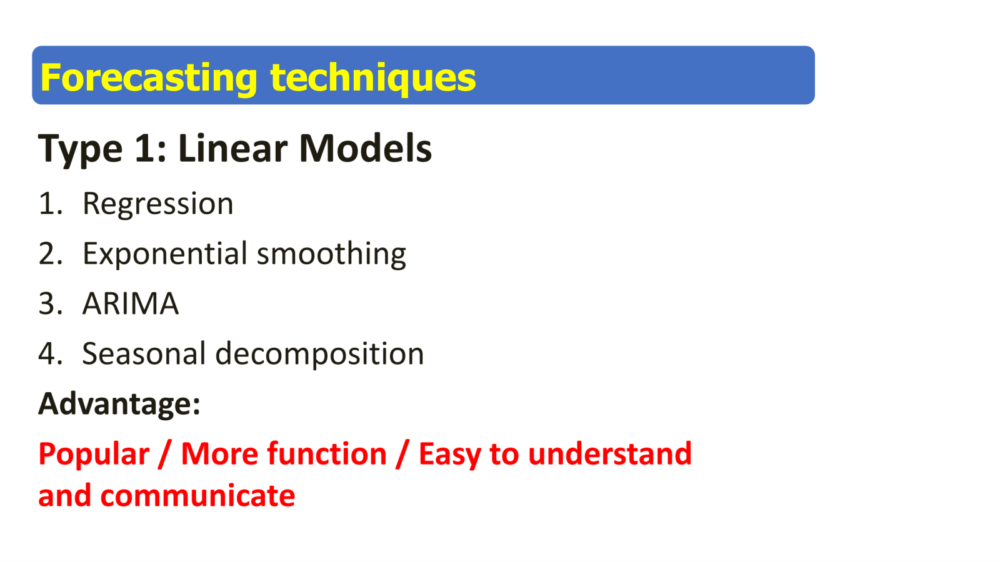
สไลด์แบ่งเทคนิคพยากรณ์เป็นสองตระกูล ตระกูลแรกคือโมเดลเชิงเส้น ได้แก่ regression, exponential smoothing, ARIMA และ seasonal decomposition ข้อดีคือนิยม ใช้งานได้หลายแบบ และอธิบายให้คนอื่นเข้าใจง่าย วิชานี้อยู่ในตระกูลนี้เกือบทั้งหมด อาจารย์ย้ำว่า regression ในวิชานี้ "ไม่ได้ศึกษาความเป็นเหตุเป็นผล" แค่ใช้หา intercept กับ slope ของ trend (Class 4, 0:02:12)
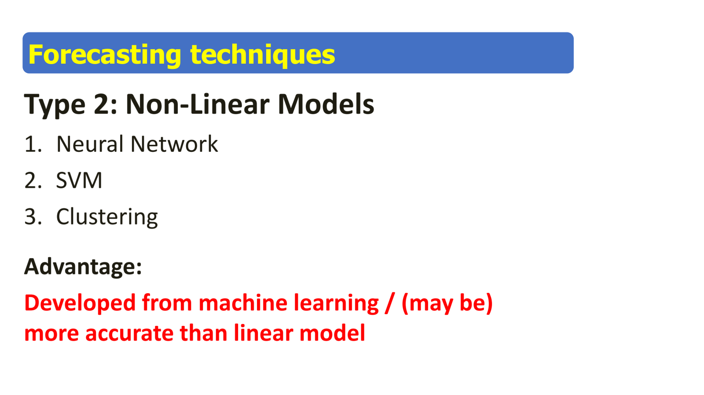
ตระกูลที่สองคือโมเดลไม่เชิงเส้น เช่น neural network, SVM และ clustering พัฒนามาจาก machine learning และ "อาจ" แม่นกว่าโมเดลเชิงเส้น คำว่าอาจในวงเล็บสำคัญ: ไม่ได้แม่นกว่าเสมอ ข้อมูลอนุกรมเวลาสั้น ๆ ที่มีรูปแบบชัดมักพยากรณ์ด้วยโมเดลเชิงเส้นได้ดีพอหรือดีกว่า
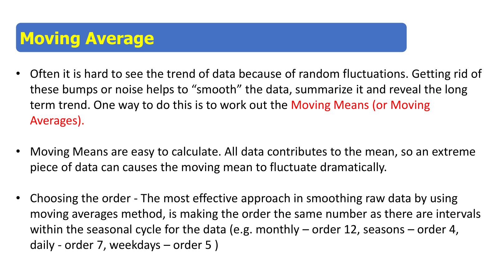
ข้อมูลจริงมักมองเห็น trend ได้ยากเพราะมีการขึ้นลงแบบสุ่ม การกำจัด noise ทำให้ข้อมูล "เรียบ" ขึ้น วิธีหนึ่งคือ Moving Means (or Moving Averages). อาจารย์อธิบายว่า moving average "ดีไซน์มาเพื่อให้มัน smoothing มากกว่า ให้มันเรียบ" (Class 4, 0:00:33) ข้อเสียคือทุกค่าในหน้าต่างมีส่วนในค่าเฉลี่ย ค่าสุดโต่งค่าเดียวจึงดึงค่าเฉลี่ยได้มาก สไลด์แนะนำให้เลือกความยาวของหน้าต่างเท่ากับรอบของ seasonal เช่น ข้อมูลรายเดือนใช้ 12 รายไตรมาสใช้ 4 รายวันใช้ 7 เพราะเมื่อเฉลี่ยครบหนึ่งรอบ ทุกฤดูถูกนับเท่ากัน ผลของฤดูกาลจึงหักล้างกัน เหลือแต่ trend หลักนี้คือที่มาของ centered moving average ในหัวข้อ 11
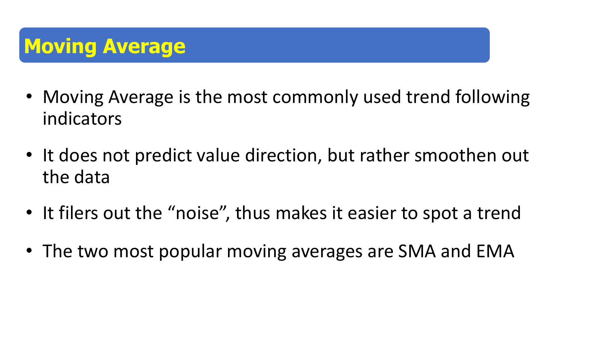
Moving average เป็นตัวชี้วัด trend ที่ใช้มากที่สุด มันไม่ได้ทำนายทิศทาง แต่ทำให้มองเห็น trend ง่ายขึ้นโดยกรอง noise ออก แบบที่นิยมคือ SMA และ EMA อาจารย์บอกว่า SMA "เรียนไปเพื่อให้รู้คอนเซ็ปต์" ส่วน EMA แตกได้หลายชนิด (Class 4, 0:04:24) เปรียบได้กับการมองภูเขาจากระยะไกล รายละเอียดของหินแต่ละก้อนหายไป เหลือรูปทรงของภูเขา
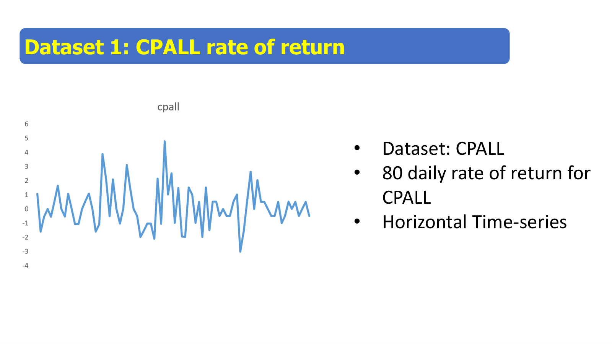
ข้อมูลชุดแรกคืออัตราผลตอบแทนรายวัน 80 วันของหุ้น CPALL ค่าแกว่งระหว่างราว −3 ถึง 4.8 รอบ 0 ไม่มี trend และไม่มี seasonal อาจารย์บอกว่า "ราคาหุ้นมันไม่ได้มี seasonal อยู่แล้วโดย nature" (Class 4, 0:05:10) สไลด์เรียกลักษณะนี้ว่าอนุกรมแนวราบ (horizontal) ข้อมูลแบ่งเป็น train 65 วันแรก และ test 15 วันท้าย อาจารย์เขียนสูตรอัตราผลตอบแทนไว้สองแบบ คือ \(R_t=(P_t-P_{t-1})/P_{t-1}\) หรือ \(R_t=\log(P_t/P_{t-1})\) "ไม่ได้เท่ากันนะ" ให้เลือกใช้แบบเดียว ค่า 0 คือเท่าทุน บวกคือกำไร ลบคือขาดทุน (Class 4, 0:06:41–0:08:08) ตัวอย่าง: ราคา 60 บาทขึ้นเป็น 61.2 บาท แบบแรกได้ 0.02 แบบ log ได้ \(\ln(1.02)=0.0198\)
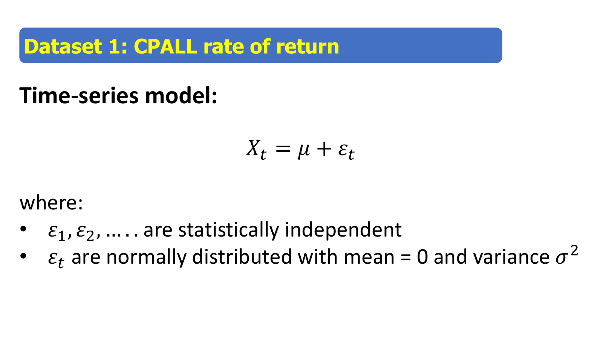
โมเดลที่เข้ากับข้อมูลแนวราบคือ \(X_t=\mu+\varepsilon_t\) ค่าเฉลี่ยคงที่บวก noise ที่อิสระและแจกแจงปกติ (สำหรับ CPALL อาจารย์บอกว่า μ = 0) ไม่มี trend ไม่มี seasonal สิ่งเดียวที่ต้องประมาณคือระดับ μ SMA และ EMA ทำหน้าที่นี้
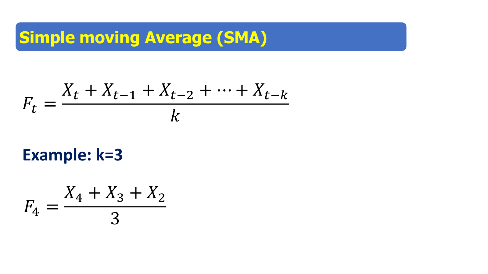
SMA คือค่าเฉลี่ยของ k ค่าล่าสุด ต้องกำหนด k ก่อน เช่น k = 4 คือบวก 4 จุดแล้วหาร 4 ตัวอย่างบนสไลด์ k = 3: \(F_4=(X_4+X_3+X_2)/3\) อาจารย์ยกอีกตัวอย่างว่า \(F_{10}=(X_{10}+X_9+X_8)/3\) (Class 4, 0:09:47)
สูตรทั่วไปบนสไลด์เขียนตัวเศษถึง \(X_{t-k}\) อาจารย์ถามว่า "ผมอยากถามว่าคุณรู้ไหมผิดยังไง" แล้วเฉลยว่า "ตัวสุดท้ายต้องเป็น \(X_{t-k+1}\)" (Class 4, 0:09:29–0:10:29) เหตุผล: นับจาก \(X_t\) ลงไปถึง \(X_{t-k}\) มี k + 1 ตัว แต่ต้องการ k ตัว สูตรที่ถูกคือ
\(F_t=\dfrac{X_t+X_{t-1}+\dots+X_{t-k+1}}{k}\)
ตรวจด้วย k = 3, t = 4: ตัวสุดท้ายคือ \(X_{4-3+1}=X_2\) ตรงกับตัวอย่าง \((X_4+X_3+X_2)/3\)
อาจารย์ให้ "ช่วยจด" ว่า SMA มีสองแบบ (Class 4, 0:10:37–0:11:53) แบบ trailing ใช้ค่าปัจจุบันกับค่าย้อนหลัง เช่น \(F_{10}=(X_{10}+X_9+X_8)/3\) อาจารย์ชอบแบบนี้ อีกแบบคือ centered ให้ค่าปัจจุบันอยู่ตรงกลาง เช่น \(F_{10}=(X_{11}+X_{10}+X_9)/3\) "ผมไม่ชอบแบบนี้ เพราะคุณใช้ค่าอนาคตมาด้วย" แบบ centered ใช้พยากรณ์ไม่ได้ แต่ใช้หา trend ใน decomposition (หัวข้อ 11)
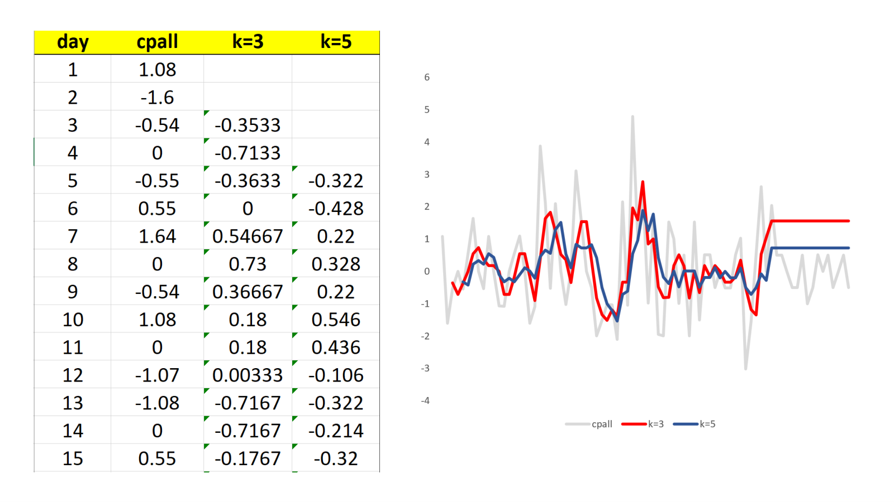
ตารางนี้คือไฟล์ Smoothing Examples ที่อาจารย์เปิดใน Excel ระหว่างสอน คอลัมน์ k = 3 เริ่มมีค่าที่วันที่ 3 และคอลัมน์ k = 5 เริ่มที่วันที่ 5 อาจารย์ถามในห้องว่าค่าในแต่ละเซลล์มาจากไหน การ์ดต่อไปนี้คำนวณซ้ำให้ตรงกับตาราง
CPALL วันที่ 1–7 คือ 1.08, −1.6, −0.54, 0, −0.55, 0.55, 1.64
\((1.08-1.6-0.54)/3=-1.06/3=-0.3533\)
\((-1.6-0.54+0)/3=-2.14/3=-0.7133\) วิธีคิดเร็ว: ค่าเดิม + (ค่าใหม่ − ค่าที่หลุด)/k \(=-0.3533+(0-1.08)/3=-0.7133\)
\((1.08-1.6-0.54+0-0.55)/5=-1.61/5=-0.322\)
k = 3 หาย 2 ค่าแรก เหลือ 78 จาก 80 ส่วน k = 5 หาย 4 ค่าแรก อาจารย์ถามว่า "ทำไมไดเมนชันมันไม่เท่าเดิม" คำตอบคือต้องมีข้อมูลครบ k ค่าก่อนจึงเฉลี่ยได้ (Class 4, 0:14:18)
ในกราฟ ข้อมูลเดิมแกว่งระหว่าง −3 ถึง 5 เส้น k = 3 แกว่งแคบลงเหลือราว −1.5 ถึง 2.8 และเส้น k = 5 แคบกว่านั้น ยิ่ง k มากยิ่งเรียบ แต่ตามการเปลี่ยนแปลงช้าลง ช่วงท้ายของกราฟเป็นเส้นราบ ซึ่งคือค่าพยากรณ์ของ test set อาจารย์อธิบายว่าใช้ค่า \(F_{65}\) ค่าเดียวพยากรณ์วันที่ 66 ถึง 80 ทั้งหมด เพราะ pretend ว่าไม่รู้ค่าใน test set จึงต่อค่าเฉลี่ยไม่ได้ ผลคือเส้นราบ "SMA ไม่ได้เหมาะกับ long term forecasting อาจจะเหมาะกับ short term แค่ 1 จุด" (Class 4, 0:17:45–0:19:54)
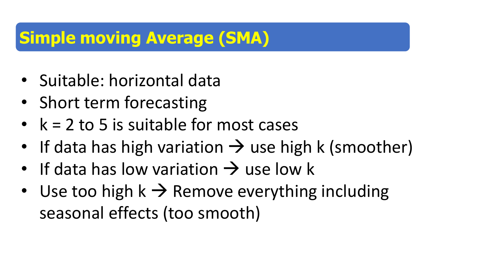
SMA เหมาะกับข้อมูลแนวราบและการพยากรณ์ระยะสั้น ค่า k ตั้งแต่ 2 ถึง 5 ใช้ได้กับกรณีส่วนใหญ่ ข้อมูลที่แกว่งมากใช้ k สูง ข้อมูลที่แกว่งน้อยใช้ k ต่ำ อาจารย์ถามในห้องว่า k = 3 กับ k = 5 อันไหนเรียบกว่า คำตอบคือ k = 5 แต่ "k มากเกินไป มัน remove ทุกอย่าง seasonal ไม่มี trend ก็หายไปเลย" อาจารย์เสริมว่าข้อมูลที่แกว่งเยอะอาจใช้ k มากกว่า 5 และนักลงทุนบางคนใช้ค่าเฉลี่ย 10–20 วัน (Class 4, 0:22:15–0:25:13) อาจารย์สรุปว่า SMA "ง่ายเกินไป เหมาะกับการสอนมากกว่า" (Class 4, 0:29:04)
library(zoo); library(forecast)
data <- ts(read.table("CPALL.txt", h = T))
train.ts <- window(data, start = 1, end = 65); test.ts <- window(data, start = 66, end = 80)
ma.trailing <- rollmean(train.ts, k = 3, align = "right") # 63 ค่า
accuracy(ma.trailing, train.ts) # self-validation
forecast <- rep(ma.trailing[63], 15) # ค่าสุดท้ายซ้ำ 15 ครั้ง
accuracy(forecast, test.ts) # cross-validation| โค้ด | ทำอะไร | ค่าที่ได้ |
|---|---|---|
| rollmean(..., align = "right") | SMA แบบ trailing (right) ถ้าใส่ "center" จะได้แบบ centered | 63 ค่า ค่าสุดท้าย 1.5533 |
| rep(ma.trailing[63], 15) | เอาค่าเฉลี่ยล่าสุดของ train ซ้ำ 15 ครั้งเป็นค่าพยากรณ์ | เส้นราบที่ 1.5533 |
| accuracy(forecast, test.ts) | error บน test (อาจารย์เรียกว่า cross validation) | RMSE 1.663, MAE 1.586 |
อาจารย์อธิบายคำศัพท์ในคลาสว่า self-validation คือวัด error บน train ส่วน cross-validation คือวัดบน test "ผมขอเน้นเฉพาะ cross validation เพราะจุดประสงค์ของ time series มักจะเป็นการ forecast ไปข้างหน้า" (Class 4, 0:20:09–0:22:10) สังเกตว่า accuracy(f, x) ใส่ค่าพยากรณ์ก่อนค่าจริง ตามที่อธิบายใน Lesson 2
ปัญหาของ SMA คือให้น้ำหนัก 1/k เท่ากันทุกค่าในหน้าต่าง ค่าเมื่อสามวันก่อนสำคัญเท่าค่าเมื่อวาน แล้วพอหลุดหน้าต่างก็สำคัญเป็นศูนย์ทันที อาจารย์อธิบายว่า EMA แก้ข้อนี้: "ความสำคัญของจุดเวลามันไม่เท่ากัน" ค่าล่าสุดน้ำหนักมาก ยิ่งไกลยิ่ง "ดาวน์เวท" (Class 4, 0:29:59–0:30:50) เปรียบเหมือนความจำของคน เรื่องเมื่อวานจำชัด เรื่องเมื่อปีก่อนจำได้รางเลือน แต่ไม่ได้ลืมสนิท
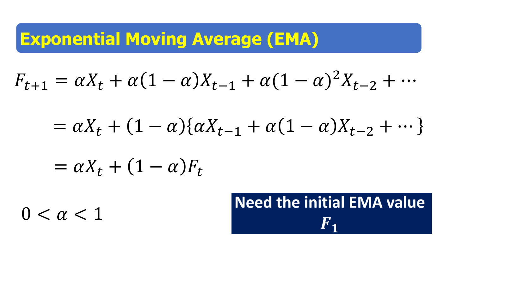
อาจารย์เขียนสูตรให้เห็นน้ำหนักก่อน (Class 4, 0:36:23–0:39:15): \(F_{10}=\alpha X_9+\alpha(1-\alpha)X_8+\alpha(1-\alpha)^2X_7+\dots\) โดย \(0<\alpha<1\) ถ้า α = 0.2 น้ำหนักคือ 0.2, 0.16, 0.128, 0.1024 ลดลง 20% ทุกช่วงเวลา จึงเรียกว่า exponential เมื่อดึง \((1-\alpha)\) ออกจากพจน์ที่สองเป็นต้นไป สิ่งที่เหลือในวงเล็บคือ \(F_9\) จึงได้รูปสั้น
\(F_{t+1}=\alpha X_t+(1-\alpha)F_t\)
ค่าพยากรณ์ใหม่คือค่าเฉลี่ยถ่วงน้ำหนักระหว่างค่าจริงล่าสุดกับค่าพยากรณ์เดิม น้ำหนักรวมทั้งหมดเท่ากับ \(\alpha\sum_{j\ge0}(1-\alpha)^j=\alpha\cdot\frac{1}{\alpha}=1\) จึงเป็นค่าเฉลี่ยที่ถูกต้อง α ใหญ่ทำให้ตามข้อมูลใหม่เร็ว α เล็กทำให้เรียบ
สูตรอ้างถึงตัวเอง จึงต้องมีค่าเริ่มต้น \(F_1\) อาจารย์บอกว่าใช้ \(X_1\) หรือค่าเฉลี่ย 3 หรือ 5 ค่าแรกก็ได้ "ถ้ายาวพอ มันจะลู่เข้าสู่เลขเดียวกัน" และ R จะเลือกทั้งค่าเริ่มต้นและ α ให้เอง (Class 4, 0:39:15–0:40:18) ในห้องอาจารย์ถามว่า \(F_1\) ใน Excel มาจากไหน นักศึกษาตอบว่าค่าเฉลี่ยสามค่าแรก (Class 4, 0:44:26)
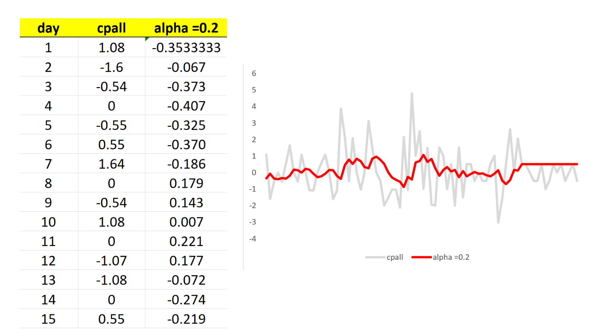
ตาราง Excel คอลัมน์ α = 0.2 เริ่มที่ \(F_1=-0.3533333\) แล้วใช้สูตร \(F_{t+1}=0.2X_t+0.8F_t\) ทีละแถว อาจารย์คำนวณสองสามแถวแรกให้ดูในคลาส การ์ดต่อไปนี้ทำซ้ำจนถึงค่าพยากรณ์ของ test set
ค่าเฉลี่ยสามวันแรก \((1.08-1.6-0.54)/3=-0.3533\) (ค่าเดียวกับ SMA k = 3 ของวันที่ 3)
\(0.2(1.08)+0.8(-0.3533)=0.216-0.2827=-0.067\)
\(0.2(-1.6)+0.8(-0.067)=-0.32-0.0533=-0.373\)
\(0.2(-0.54)+0.8(-0.373)=-0.108-0.2987=-0.407\)
ค่าสุดท้ายของ train: \(X_{65}=2.04\), \(F_{65}=0.128\) จึงได้ \(F_{66}=0.2(2.04)+0.8(0.128)=0.408+0.1025=0.510\) อาจารย์อธิบายว่ายังใช้ \(X_{65}\) ได้เพราะอยู่ใน train แต่ใช้ \(X_{66}\) ไม่ได้ จึงใช้ 0.510 ค่าเดียวพยากรณ์วันที่ 66–80 ทั้งหมด
เส้น EMA ในกราฟแกว่งแคบราว −1 ถึง 1.1 เรียบกว่า SMA k = 5 เพราะ α = 0.2 ให้ค่าล่าสุดแค่ 20% ในตารางนี้ แถวของวัน t คือค่าพยากรณ์ของวัน t ที่คำนวณจากข้อมูลถึงวัน t − 1
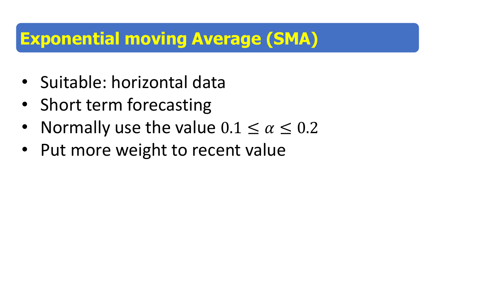
EMA เหมาะกับข้อมูลแนวราบและการพยากรณ์ระยะสั้นเช่นเดียวกับ SMA ค่า α ที่นิยมคือ 0.1 ถึง 0.2 และให้น้ำหนักค่าล่าสุดมากกว่า หัวเรื่องของสไลด์พิมพ์ว่า "(SMA)" ซึ่งที่ถูกคือ EMA
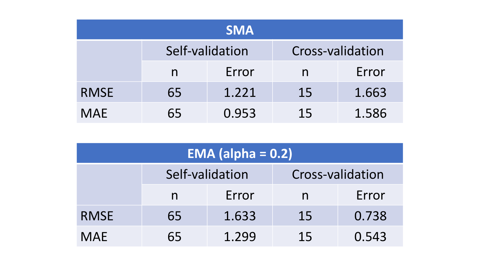
ตารางเทียบ error สองแบบ ค่าที่รันจริงตรงกับสไลด์ทุกค่า
| Self-validation (train 65 วัน) RMSE | MAE | Cross-validation (test 15 วัน) RMSE | MAE | |
|---|---|---|---|---|
| SMA k = 3 | 1.221 | 0.953 | 1.663 | 1.586 |
| EMA α = 0.2 | 1.633 | 1.299 | 0.738 | 0.543 |
อาจารย์สรุปว่า "ถ้าเทียบ 2 โมเดลนี้ก็คงเลือก EMA" (Class 4, 0:59:02) เพราะดูที่คอลัมน์ test ซึ่ง EMA ดีกว่ามาก ส่วนคอลัมน์ train SMA ดูดีกว่า เป็นตัวอย่างของหลักใน Lesson 2: ผลบนข้อมูลที่ใช้สร้างโมเดลไม่ใช่ตัวตัดสิน ข้อควรระวัง: ในคลิปอาจารย์อ่านจาก Excel ได้ 0.789 และ 0.565 (Class 4, 0:49:43) ซึ่งไม่ตรงกับสไลด์ คำนวณซ้ำจากค่าจริง 15 วัน (0.5, 0.5, 0, −0.5, −0.5, 0.5, −1, −0.5, 0.51, 0, 0.5, −0.5, 0, 0.5, −0.5) กับค่าพยากรณ์ 0.510 ได้ RMSE = 0.738 และ MAE = 0.543 ตรงกับสไลด์และ R
library(forecast)
ema <- ets(train.ts, model = "ANN", alpha = 0.2)
forecast(ema, h = 15, level = 0) # level = 0 ไม่แสดงช่วงความเชื่อมั่น
fc <- forecast(ema, h = 15)$mean # $mean คือค่าพยากรณ์
accuracy(fc, test.ts)| โค้ด | ทำอะไร |
|---|---|
| ets(train.ts, model = "ANN", alpha = 0.2) | single exponential smoothing ที่กำหนด α เอง ถ้าไม่ใส่ alpha R จะเลือกให้ |
| forecast(ema, h = 15) | พยากรณ์ 15 ช่วงข้างหน้า ค่าเริ่มต้นแสดงช่วง 80% และ 95% (อาจารย์พูดว่า 85% แล้วแก้เป็น 80%) |
| level = 0 | ไม่แสดงช่วงความเชื่อมั่น |
| $mean, $fitted | $mean คือค่าพยากรณ์ test (0.5105) $fitted คือค่าใน train "ไม่มีประโยชน์เท่าไหร่" |
ค่าเริ่มต้นที่ R ประมาณคือ l = −0.0336 ไม่ใช่ −0.3533 แบบ Excel ค่าพยากรณ์จึงต่างจาก Excel เล็กน้อยในทศนิยมหลักท้าย (Class 4, 0:50:36–0:58:32) และถ้าไม่กำหนด α ให้ R เลือกเอง R จะได้ α = 0.0001 ซึ่งเกือบเป็นค่าเฉลี่ยคงที่ เพราะข้อมูลแนวราบที่แกว่งแบบสุ่มพยากรณ์ได้ดีที่สุดด้วยค่าเฉลี่ยระยะยาว นี่คือเหตุผลที่อาจารย์ให้ทำควิซด้วย Excel และบอกค่าเริ่มต้นให้: R จะ optimize ค่าเหล่านี้เอง ผลจึงไม่ตรงกับการคำนวณมือ
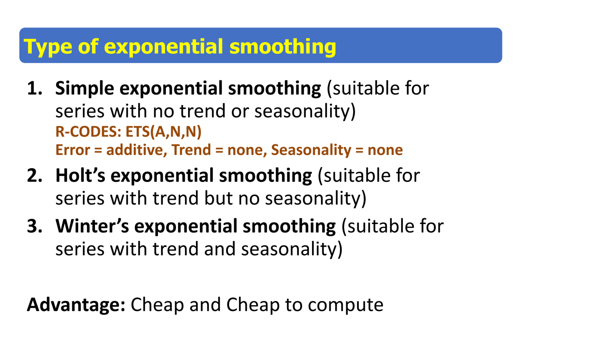
อาจารย์เขียนสรุปบนกระดาษว่าตระกูลนี้มีสามชนิด (Class 4, 0:30:58–0:33:42) single EMA มีหนึ่งสมการ ใช้กับข้อมูลไม่มี trend ไม่มี seasonal double EMA หรือ Holt มีสองสมการ จับ trend ได้ triple EMA หรือ Holt-Winters มีสามสมการ จับทั้ง trend และ seasonal อาจารย์เล่าว่า "Winters เป็นลูกศิษย์ของ Holt มาพัฒนาโมเดลของอาจารย์" และใน R ใช้คำสั่ง ets() คำสั่งเดียวครอบคลุมทั้งสาม โดยเลือกตัวที่ AIC ดีที่สุดให้ "อย่างน้อยเราเข้าใจคอนเซ็ปต์หน่อย แต่ทำจริงให้โปรแกรมทำ" (Class 4, 0:34:40–0:35:32) ข้อดีที่สไลด์ระบุคือคำนวณเร็ว
อาจารย์อธิบายว่า ETS มีสามตำแหน่งเรียงกัน error, trend, seasonal (Class 4, 1:00:14) แต่ละตำแหน่งเป็นตัวอักษรหนึ่งตัว
| ตัวอักษร | ความหมาย |
|---|---|
| N | None ไม่มี |
| A | Additive แบบบวก (trend เป็นเส้นตรง, seasonal แกว่งเท่าเดิม) |
| M | Multiplicative แบบคูณ (trend เป็นเส้นโค้ง, seasonal แกว่งกว้างขึ้นตามระดับ) |
| Ad | Additive damped trend ที่ค่อย ๆ ชะลอ (R รุ่นใหม่มี) |
| Z | ให้ R เลือก |
CPALL ไม่มี trend ไม่มี seasonal จึงเป็น ANN (Class 4, 1:01:07) ตำแหน่งของ error "ดูจากรูปยาก ให้โปรแกรมเลือกให้" (Class 4, 1:04:42) ส่วน trend และ seasonal ดูจากกราฟได้
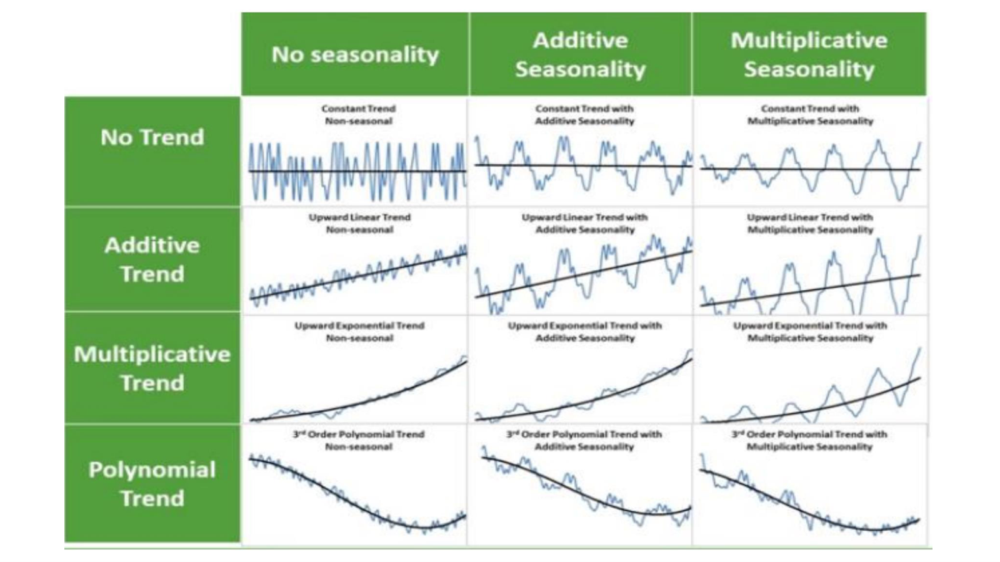
ตารางนี้จับคู่รูปร่างของกราฟกับชื่อโมเดล อาจารย์ใช้ตารางนี้ให้นักศึกษาดูรูปแล้วตัดสินใจเอง (Class 4, 1:07:34–1:11:06) แถวคือชนิดของ trend: ไม่มี, เส้นตรง (additive), เส้นโค้งชันขึ้น (multiplicative หรือ exponential) และพหุนาม คอลัมน์คือชนิดของ seasonal: ไม่มี, additive และ multiplicative อาจารย์อธิบายความต่างของสองคอลัมน์หลังว่า "additive แกว่งเท่าเดิม multiplicative ช่วงแรกแกว่งน้อยช่วงท้ายแกว่งเยอะ" และบอกว่า ARIMA ที่จะเรียนในอีกสองสัปดาห์ "จะแก้อีกแบบหนึ่ง" คือ take log (Class 4, 1:10:32) วิธีจัดกราฟใหม่ลงตาราง: ดูเส้นกลางเพื่อเลือกแถว ดูว่ามีคลื่นซ้ำไหม แล้วดูว่าความสูงของคลื่นคงที่หรือโตตามเส้นกลาง
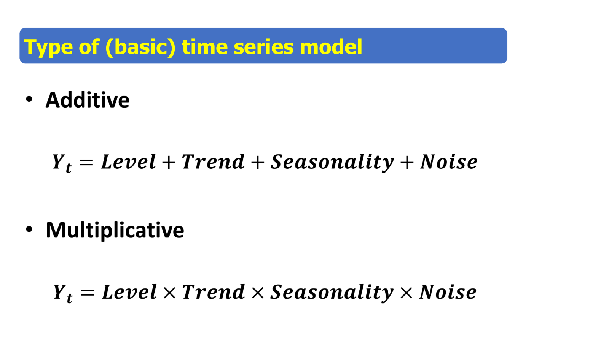
โมเดลพื้นฐานมีสองแบบ แบบบวก \(Y_t=\text{Level}+\text{Trend}+\text{Seasonality}+\text{Noise}\) และแบบคูณ \(Y_t=\text{Level}\times\text{Trend}\times\text{Seasonality}\times\text{Noise}\) เป็นแนวคิดเดียวกับ decomposition ใน Lesson 1 แต่แยก level ออกจาก trend ชัดขึ้น level คือระดับปัจจุบัน trend คืออัตราที่ระดับเปลี่ยน เปรียบกับรถยนต์ level คือตำแหน่งที่รถอยู่ trend คือความเร็ว
EMA พยากรณ์เป็นเส้นราบ ถ้าข้อมูลมี trend ขาขึ้น ค่าพยากรณ์จะต่ำกว่าจริงตลอด เพราะ EMA เฉลี่ยจากอดีตซึ่งต่ำกว่าปัจจุบันเสมอ อาจารย์ใช้ข้อมูลยอดขายรายเดือนอธิบายว่าทำไมต้องมีวิธีของ Holt (Class 4, 1:06:21)
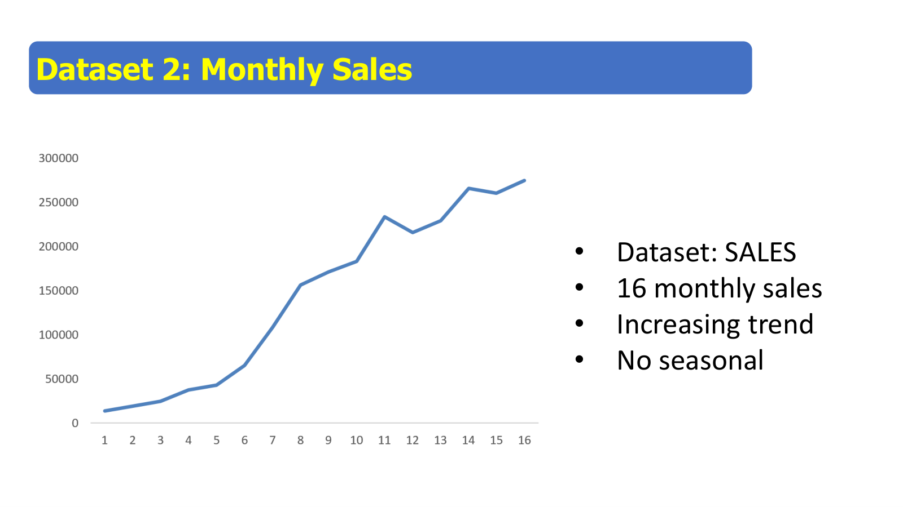
ยอดขาย 16 เดือน: 13,931 ในเดือนแรก ขึ้นเร็วช่วงเดือน 6–8 จาก 65,225 เป็น 156,508 ถึง 233,715 ในเดือน 11 ลดเล็กน้อยในเดือน 12 แล้วขึ้นต่อจนจบที่ 274,515 มี trend ขาขึ้นและไม่มี seasonal
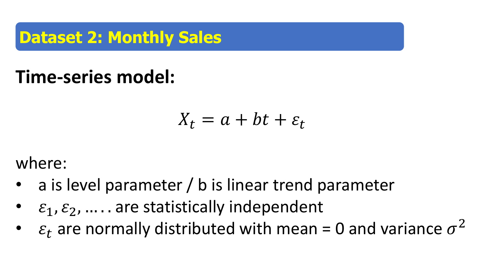
โมเดลคือ \(X_t=a+bt+\varepsilon_t\) อาจารย์อธิบายว่าคือ simple linear regression บวก error (Class 4, 1:07:14) a คือระดับ b คือความชันของ trend เทียบกับ CPALL ระดับคงที่ μ ถูกแทนด้วยเส้นตรง a + bt จึงต้องมีส่วนที่ติดตามความชันเพิ่ม
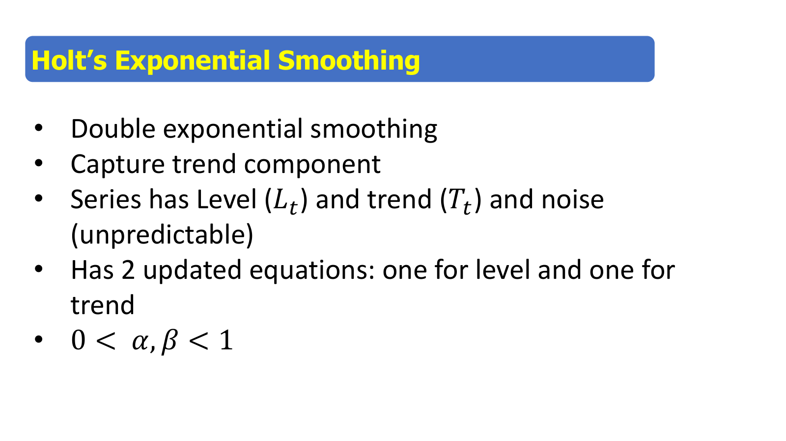
Holt มองว่าข้อมูลมี level \(L_t\), trend \(T_t\) และ noise ที่พยากรณ์ไม่ได้ จึงมีสมการปรับค่าสองสมการ หนึ่งสำหรับ level หนึ่งสำหรับ trend โดย \(0<\alpha,\beta<1\) อาจารย์อธิบายว่า α ใช้กับ level β ใช้กับ trend และต้องคำนวณ L ก่อนแล้วค่อย T (Class 4, 1:13:07–1:16:06) เปรียบกับการติดตามรถที่กำลังวิ่ง ต้องรู้ทั้งตำแหน่งปัจจุบันและความเร็ว ทุกครั้งที่เห็นรถใหม่ก็ปรับทั้งสองค่า
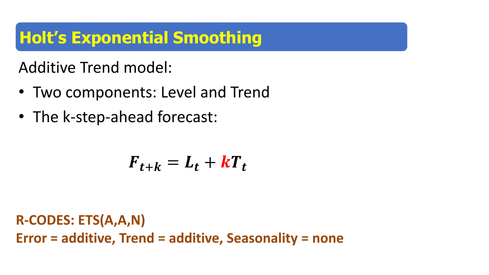
หน้านี้ให้สมการพยากรณ์ของ Holt แบบ trend บวก ซึ่งเป็นจุดที่อาจารย์เน้นที่สุดของคาบนี้ ค่าพยากรณ์เริ่มจาก level ล่าสุดแล้วเดินต่อด้วยความชันล่าสุดทีละก้าว จึงเป็นเส้นตรงที่ต่อจากจุดสุดท้ายของข้อมูล
ค่าพยากรณ์ k ช่วงข้างหน้าคือ
\(F_{t+k}=L_t+k\,T_t\)
อาจารย์ยกตัวอย่าง: ถ้าข้อมูลถึงเวลา 50 จะได้ \(F_{51}=L_{50}+T_{50}\), \(F_{52}=L_{50}+2T_{50}\), \(F_{53}=L_{50}+3T_{50}\) "มันไม่ใช่เลขเดียวแล้ว" (Class 4, 1:16:48–1:18:20) ต่างจาก SMA และ EMA ที่พยากรณ์เป็นเส้นราบ ตัวอย่างตัวเลข: \(L_t=200\), \(T_t=5\) ได้ 205, 210, 215 จุดที่มักพลาดคือใช้ \(L_{t+k-1}\) หรือ \(T_{t+k}\) ซึ่งยังไม่มีในอนาคต ต้องใช้ค่าล่าสุดที่รู้เท่านั้น
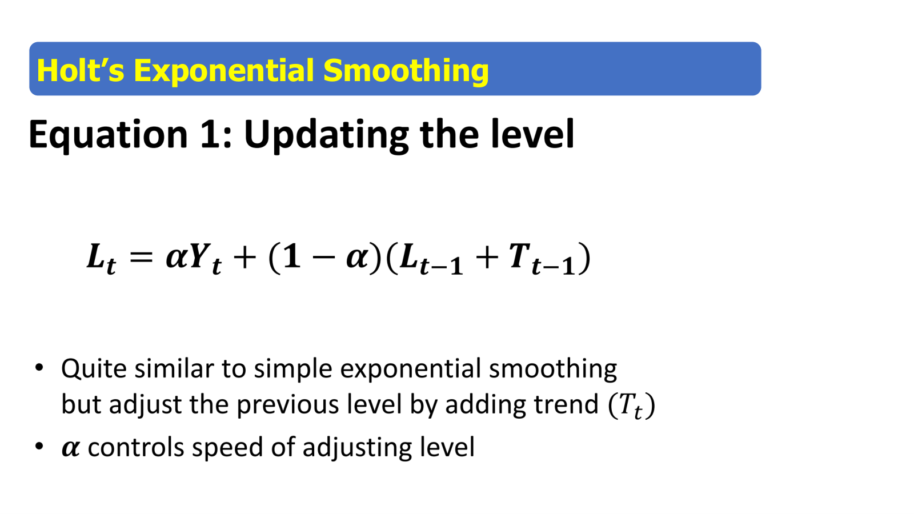
สมการแรกคือ \(L_t=\alpha Y_t+(1-\alpha)(L_{t-1}+T_{t-1})\) คล้าย EMA แต่ค่าเดิมที่นำมาผสมคือ \(L_{t-1}+T_{t-1}\) ซึ่งเป็นตำแหน่งที่คาดไว้ถ้าเดินต่อตามความชันเดิม และเท่ากับค่าพยากรณ์ \(F_t\) พอดี สมการจึงผสมค่าจริง \(Y_t\) กับค่าที่คาดไว้ โดย α ควบคุมว่าจะเชื่อค่าจริงมากแค่ไหน
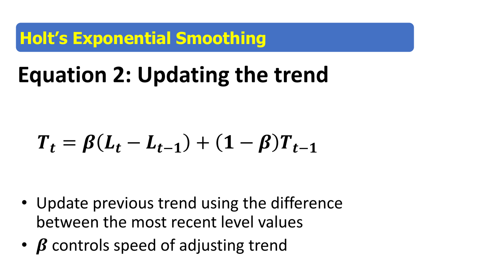
สมการที่สองคือ \(T_t=\beta(L_t-L_{t-1})+(1-\beta)T_{t-1}\) ส่วน \(L_t-L_{t-1}\) คือความชันที่เพิ่งวัดได้ สมการผสมความชันใหม่กับความชันเดิม โครงสร้างเหมือน EMA ทุกประการ ต่างกันที่สิ่งที่ปรับเรียบคือความชัน ไม่ใช่ระดับ
| สมการ (additive trend) | อ่านว่า | |
|---|---|---|
| Forecast | \(F_{t+k}=L_t+k\,T_t\) | ระดับปัจจุบัน บวก k ก้าวของความชัน |
| Level | \(L_t=\alpha Y_t+(1-\alpha)(L_{t-1}+T_{t-1})\) | ผสมค่าจริงกับค่าที่คาดไว้ |
| Trend | \(T_t=\beta(L_t-L_{t-1})+(1-\beta)T_{t-1}\) | ผสมความชันใหม่กับความชันเดิม |
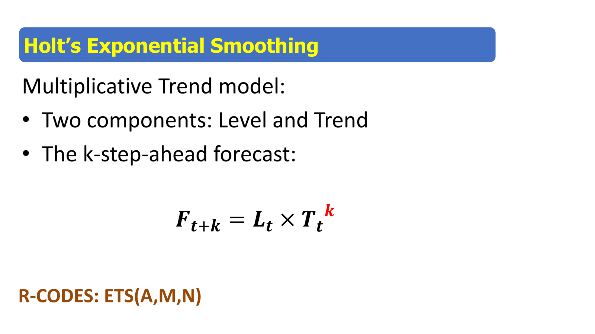
ถ้า trend เป็นเส้นโค้งที่โตเป็นสัดส่วน ใช้แบบคูณ ค่าพยากรณ์คือ \(F_{t+k}=L_t\times T_t^{\,k}\) ตรงนี้ \(T_t\) เป็นอัตราการเติบโต เช่น 1.05 หมายถึงโต 5% ต่อช่วง อาจารย์ยกตัวอย่าง \(F_{52}=L_{50}\cdot T_{50}^2\) (Class 4, 1:18:47) ตัวอย่างตัวเลข: \(L_t=100\), \(T_t=1.1\) ได้ 110, 121, 133.1 เพิ่มครั้งละมากขึ้น
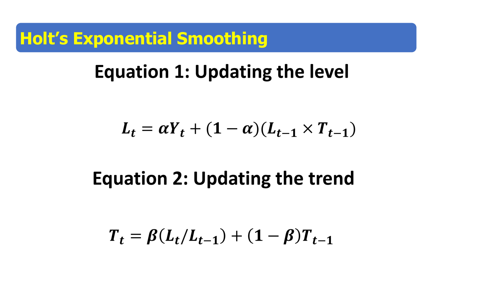
อาจารย์สอนวิธีจำว่า แบบคูณ "เปลี่ยนบวกเป็นคูณ ลบเป็นหาร" (Class 4, 1:18:29–1:20:51) จึงได้ \(L_t=\alpha Y_t+(1-\alpha)(L_{t-1}T_{t-1})\) และ \(T_t=\beta(L_t/L_{t-1})+(1-\beta)T_{t-1}\) ความชันจากผลต่างกลายเป็นอัตราส่วน
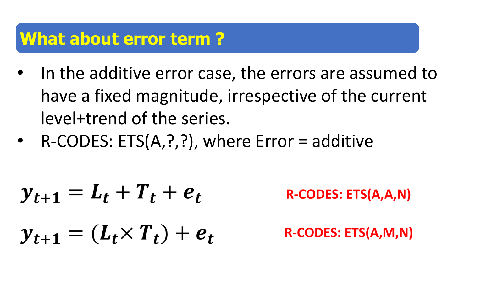
ตำแหน่งแรกของ ETS คือชนิดของ error แบบบวกสมมติว่า error มีขนาดคงที่ ไม่ขึ้นกับระดับ สมการคือ \(y_{t+1}=L_t+T_t+e_t\) สำหรับ trend แบบบวก และ \(y_{t+1}=L_tT_t+e_t\) สำหรับ trend แบบคูณ
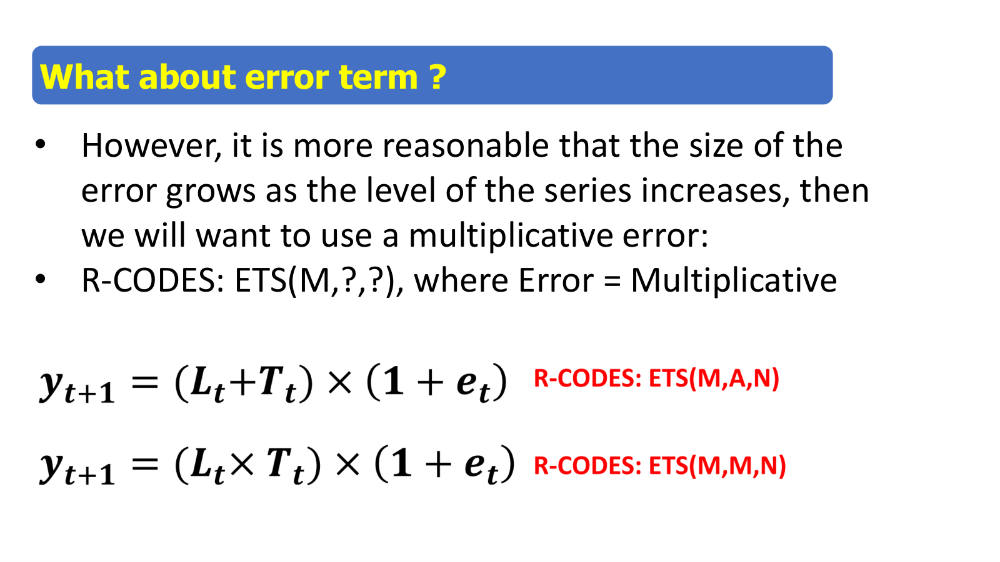
ในหลายกรณีขนาดของ error โตตามระดับ จึงใช้ error แบบคูณ อาจารย์อธิบายว่า "คูณด้วย (1 + e)" (Class 4, 1:21:00) เช่น \(y_{t+1}=(L_t+T_t)(1+e_t)\) ถ้า \(e_t=0.1\) แปลว่าคลาด 10% ที่ระดับ 100 คือ 10 หน่วย ที่ระดับ 10,000 คือ 1,000 หน่วย
| สมการ | ETS | Error | Trend |
|---|---|---|---|
| \(y_{t+1}=L_t+T_t+e_t\) | (A,A,N) | บวก | บวก |
| \(y_{t+1}=L_tT_t+e_t\) | (A,M,N) | บวก | คูณ |
| \(y_{t+1}=(L_t+T_t)(1+e_t)\) | (M,A,N) | คูณ | บวก |
| \(y_{t+1}=L_tT_t(1+e_t)\) | (M,M,N) | คูณ | คูณ |
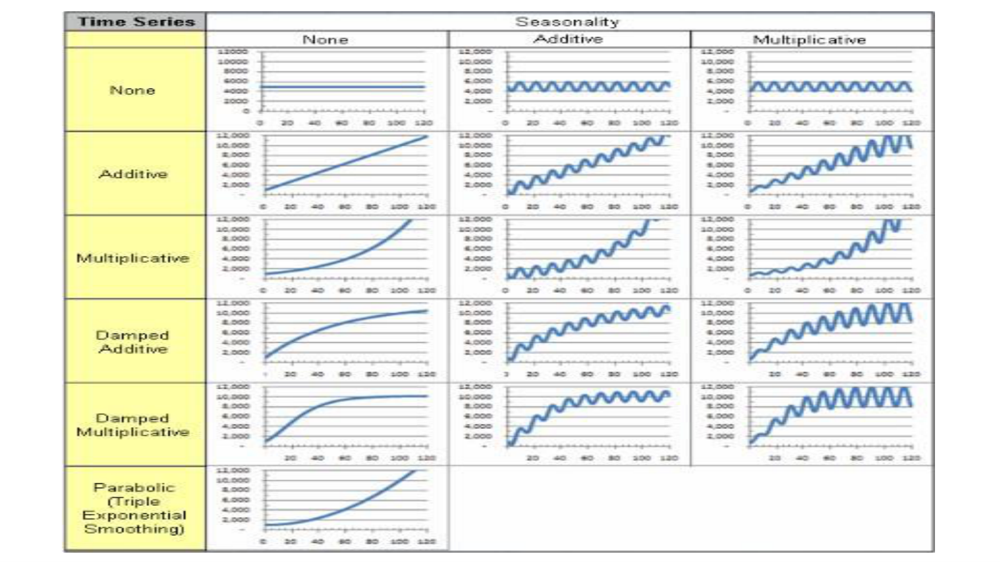
ตารางแสดงรูปทรงของค่าพยากรณ์ 120 ช่วงของแต่ละโมเดล ไม่มี trend เป็นเส้นราบ trend แบบบวกเป็นเส้นตรง trend แบบคูณเป็นเส้นโค้งที่ชันขึ้นเรื่อย ๆ แบบ damped additive ขึ้นเร็วแล้วค่อย ๆ ราบ แบบ damped multiplicative เป็นรูปตัว S และแบบพาราโบลาเป็นเส้นโค้งกำลังสอง คอลัมน์ seasonal เพิ่มคลื่นซ้อนบนเส้นเหล่านี้ คำว่า damped หมายถึง trend ที่ถูกหน่วงให้ความชันลดลงเรื่อย ๆ ซึ่งใช้ในหัวข้อ 7
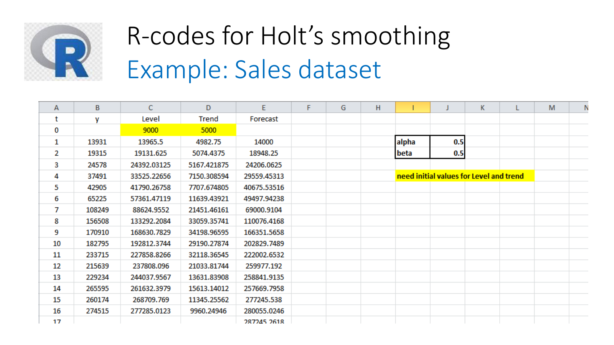
Excel ใช้ α = β = 0.5 และต้องมีค่าเริ่มต้น \(L_0=9000\), \(T_0=5000\) อาจารย์บอกว่าค่าเริ่มต้นนี้ "เอามาจาก YouTube" และเลือกให้ \(L_0+T_0\) ใกล้ \(Y_1=13931\) (Class 4, 1:23:17–1:25:35)
\(L_0+T_0=9000+5000=14000\)
\(0.5(13931)+0.5(9000+5000)=6965.5+7000=13965.5\)
\(0.5(13965.5-9000)+0.5(5000)=2482.75+2500=4982.75\)
\(L_1+T_1=13965.5+4982.75=18948.25\)
\(L_2=0.5(19315)+0.5(18948.25)=19131.625\) และ \(T_2=0.5(19131.625-13965.5)+0.5(4982.75)=5074.44\)
\(L_{16}=277285.01\), \(T_{16}=9960.25\) จึงได้ \(F_{17}=287245.26\), \(F_{18}=L_{16}+2T_{16}=297205.51\), \(F_{19}=L_{16}+3T_{16}=307165.76\) (Class 4, 1:28:13–1:29:44)
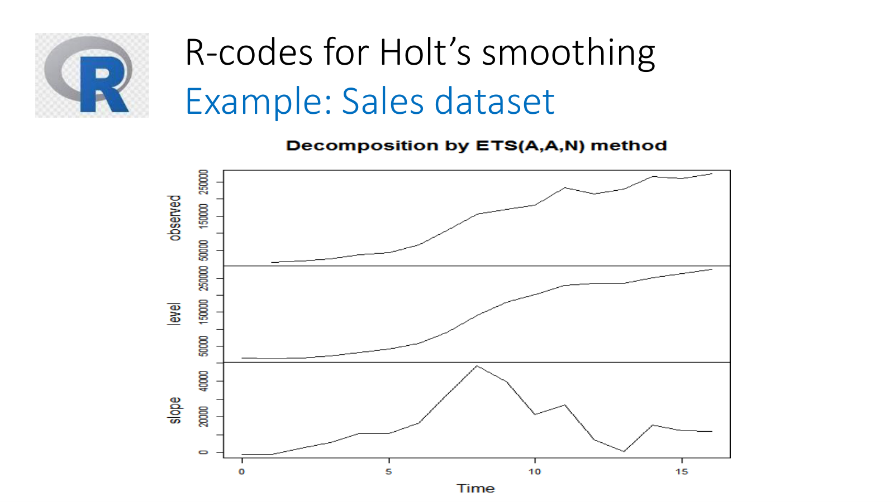
R แยกผลเป็นสามส่วน observed คือยอดขายจริง level คือเส้นเรียบของระดับ และ slope คือ \(T_t\) ของแต่ละเวลา slope ใกล้ 0 ช่วงต้น สูงสุดราว 47,000 ที่ t ประมาณ 8 ซึ่งเป็นช่วงที่ยอดขายพุ่ง แล้วลดลงเกือบ 0 ที่ t = 13 เมื่อยอดขายชะลอ ส่วน slope ตอบคำถามว่าขณะนั้นข้อมูลโตเร็วแค่ไหน
library(forecast)
data <- ts(read.table("sales.txt", h = T))
holt.additive <- ets(data, model = "AAN") # ให้ R เลือก alpha, beta
holt.additive
forecast(holt.additive, h = 5, level = 0)
ets(data, model = "AAN", alpha = 0.5, beta = 0.5) # กำหนดเองETS(A,A,N) Smoothing parameters: alpha = 0.7851 beta = 1e-04 Initial states: l = -30284.4432 b = 21061.963 sigma: 22291.22 AIC 370.1398 AICc 376.1398 BIC 374.0028 Point forecast t = 17–21: 298119.5 319177.6 340235.8 361294.0 382352.2
| ส่วนของผล | ความหมาย |
|---|---|
| alpha = 0.7851 | level เชื่อค่าจริงล่าสุดเกือบ 80% |
| beta = 1e-04 | ความชันแทบไม่ปรับ ใช้ค่าเริ่มต้นตลอด |
| l = −30284, b = 21062 | ค่าเริ่มต้นที่ R ประมาณ (ต่างจาก 9000 กับ 5000 ของ Excel) |
| Point forecast | เพิ่มทีละ 21,058 ซึ่งคือความชันล่าสุด เส้นตรงตาม \(L_t+kT_t\) |
อาจารย์บอกว่าค่าไม่เท่า Excel เพราะ α, β และค่าเริ่มต้นต่างกัน และถ้าไม่ใส่ model R ก็เลือก AAN เหมือนเดิม (Class 4, 1:31:09–1:33:49) ค่าพยากรณ์ของ R ที่ t = 17 คือ 298,120 สูงกว่าของ Excel (287,245) เพราะ R ใช้ความชัน 21,062 ขณะที่ Excel ปรับความชันลงเหลือ 9,960 ตามข้อมูลช่วงท้ายที่ชะลอ
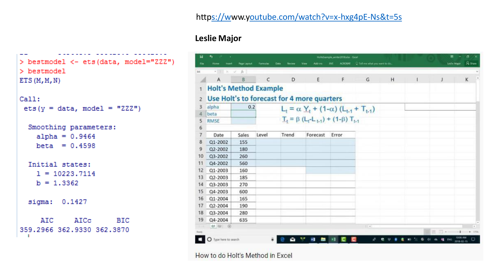
หน้านี้มีผลของ ets(data, model = "ZZZ") จากรุ่นเก่าของ R ซึ่งเลือก ETS(M,M,N) ที่ alpha = 0.9464, beta = 0.4598 และ AIC 359.30 เมื่อรันด้วย package forecast รุ่นปัจจุบัน R เลือก ETS(A,A,N) ผลเดียวกับข้างบน ความต่างนี้มาจากรุ่นของ package ไม่ใช่ข้อมูล ถ้าข้อสอบให้ output มา ให้อ่านตาม output ที่ให้ ส่วนล่างเป็นโจทย์ฝึก Holt ด้วยข้อมูลรายไตรมาส 155, 180, 260, 560, 160, 185, 270, 600, 165, 190, 280, 635 ข้อมูลนี้ไตรมาส 4 สูงสุดทุกปี คือมี seasonal ชัด Holt ซึ่งไม่มีส่วน seasonal จะพยากรณ์ไตรมาส 4 ต่ำเกินทุกปี ข้อมูลแบบนี้ต้องใช้ Holt-Winters ในหัวข้อ 8
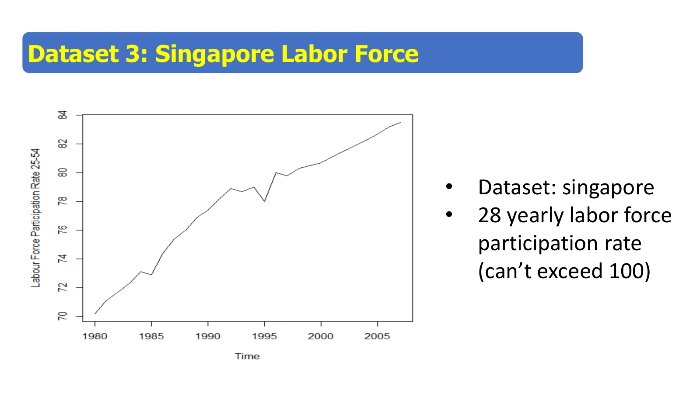
อัตราการมีส่วนร่วมในกำลังแรงงานรายปี 28 ปี เพิ่มจาก 70.2% ในปี 1980 เกือบเป็นเส้นตรงถึง 83.5% สไลด์กำกับว่าค่านี้เกิน 100 ไม่ได้ อาจารย์อธิบายว่า "ถ้าให้มันเป็นเส้นตรงเหมือนเดิม forecast มันอาจจะทะลุร้อย" และเทียบกับเส้นรูปตัว S ของ logistic regression (Class 4, 1:48:20–1:49:48) วิธีแก้คือ damped trend ซึ่งความชัน "โค้งเข้า" ไม่ขึ้นไปเรื่อย ๆ
singapur <- ts(read.table("singapore.txt"), start = 1980)
holt(singapur, h = 15) # Holt ธรรมดา
holt(singapur, h = 15, damped = TRUE) # เพิ่มพารามิเตอร์ phi
ets(singapur) # ให้ R เลือกETS(M,Ad,N) alpha = 0.528 beta = 1e-04 phi = 0.959 l = 69.3963 b = 0.868 AIC 62.09 พยากรณ์ปี 2022 (15 ปีข้างหน้า): holt 89.32 holt damped 86.88 ets(M,Ad,N) 86.35
R เลือก ETS(M,Ad,N) อาจารย์อ่านว่า "Ad มาจาก additive damped" error เป็นแบบคูณ (Class 4, 1:56:35) φ คือพารามิเตอร์หน่วงความชัน ค่าพยากรณ์ k ก้าวข้างหน้าใช้ความชันรวม \(T_t(\phi+\phi^2+\dots+\phi^k)\) แทน \(kT_t\) เช่น φ = 0.959, k = 15 ได้ผลรวมราว 10.9 แทนที่จะเป็น 15 ความชันรวมจึงถูกหน่วงลงราวหนึ่งในสี่ ค่าพยากรณ์ปี 2022 จึงอยู่ที่ราว 86–87 แทน 89 อาจารย์บอกว่า "ส่วนใหญ่ไม่ค่อยเจอประเภทนี้ ถ้าไม่ได้เป็นเปอร์เซ็นต์ มันอาจจะไม่ต้องมี damp" และ "ถ้าแนะนำรุ่นคุณ ใช้ ETS อย่างเดียวพอ" (Class 4, 1:55:27, 1:58:02) ค่า φ ของ holt(damped = TRUE) คือ 0.967 ต่างจาก ets() เล็กน้อยเพราะเป็นคนละคำสั่ง
Holt จับ trend ได้ แต่ถ้าข้อมูลมีรูปแบบซ้ำตามฤดู เช่น ไตรมาส 4 สูงทุกปี Holt จะพยากรณ์ไตรมาสนั้นต่ำเกินเสมอ Holt-Winters เพิ่มสมการที่สามสำหรับ seasonal อาจารย์บอกว่าจะไม่สอนคำนวณมือ "เพราะมันมี 3 สมการ" (Class 4, 1:58:39) สิ่งที่ต้องได้จากหัวข้อนี้คือเข้าใจสมการ รู้ว่าพารามิเตอร์ตัวไหนคู่กับอะไร และอ่านผลของ R ได้
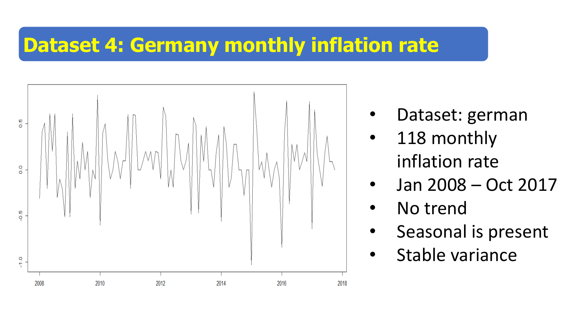
อัตราเงินเฟ้อรายเดือนของเยอรมนี 118 เดือน ม.ค. 2008 ถึง ต.ค. 2017 อาจารย์บอกว่าบางประเทศเก็บรายไตรมาส (Class 4, 1:59:02) ค่าแกว่งระหว่างราว −1.0 ถึง 0.85 รอบราว 0.1 สไลด์สรุปว่าไม่มี trend มี seasonal และความแปรปรวนคงที่
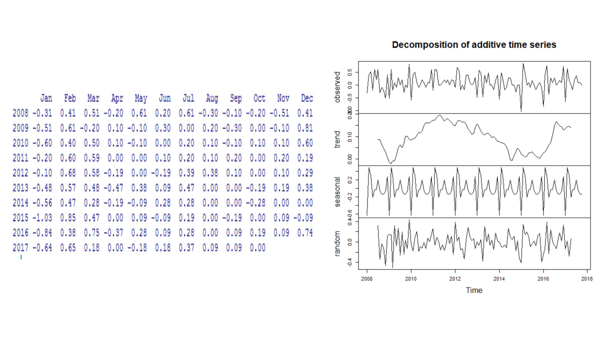
ถ้าอ่านตารางตามคอลัมน์ของเดือน มกราคมติดลบทุกปี (−0.31, −0.51, −0.60, −0.20, −0.10, −0.48, −0.56, −1.03, −0.84, −0.64) ส่วนกุมภาพันธ์เป็นบวกทุกปี (0.41 ถึง 0.85) ตัวเลขที่ขึ้นลงตามเดือนเดิมทุกปีคือหลักฐานของ seasonal อาจารย์ใช้ decompose() โชว์ล่วงหน้าว่า trend "ไม่น่ามี" แต่ seasonal "น่าจะมี" (Class 4, 2:00:31) ค่า seasonal ที่ R คำนวณได้คือ ม.ค. −0.638, ก.พ. +0.491, มี.ค. +0.313 และ ธ.ค. +0.282 เป็นสามเดือนที่ห่างจากศูนย์มากที่สุด
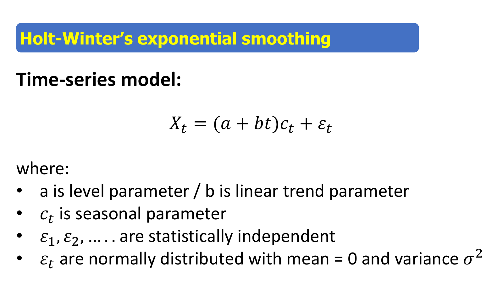
โมเดลคือ \(X_t=(a+bt)c_t+\varepsilon_t\) เพิ่มตัวคูณ \(c_t\) จากโมเดลของ Holt เพื่อยกหรือกดระดับตามฤดู
สไลด์เล่าว่า Charles C. Holt เป็นศาสตราจารย์ที่ University of Texas at Austin และเป็นที่รู้จักจากงานของตัวเองและของ his student, Peter Winters สรุปสั้น ๆ ว่า Winter took the idea of Holt and added the Seasonalcomponent. That’s it Holt มีสองสมการ (level, trend) Holt-Winters มีสามสมการ (level, trend, seasonal)
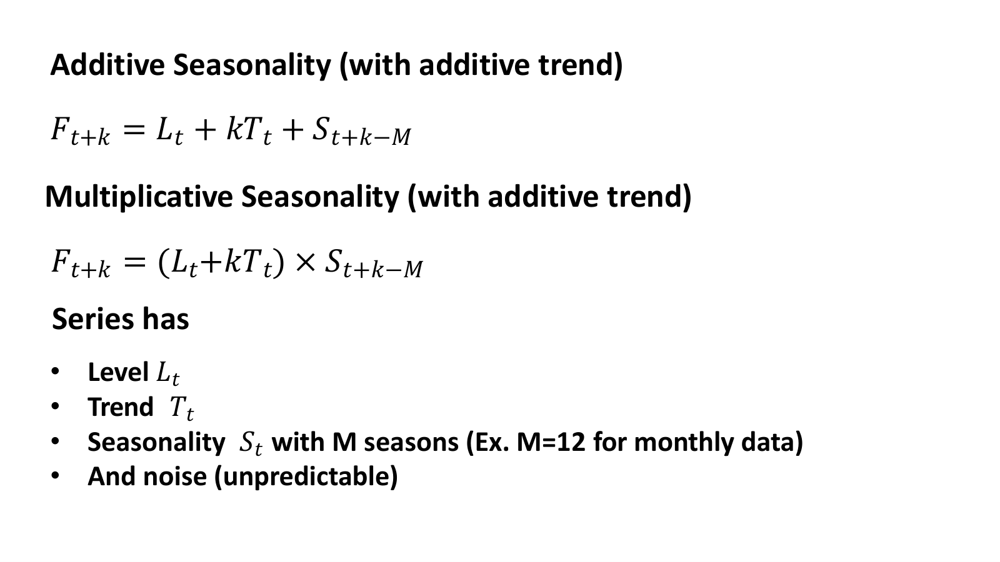
ค่าพยากรณ์มีสองแบบ แบบ seasonal บวก \(F_{t+k}=L_t+kT_t+S_{t+k-m}\) และแบบ seasonal คูณ \(F_{t+k}=(L_t+kT_t)\times S_{t+k-m}\) อาจารย์อธิบายว่า m คือความยาวรอบของ seasonal รายเดือน m = 12 รายไตรมาส m = 4 (Class 4, 2:01:12–2:04:29) ตัว \(S_{t+k-m}\) คือค่า seasonal ของฤดูเดียวกันในรอบที่แล้ว เช่น พยากรณ์ธันวาคมปีหน้า ใช้ค่า seasonal ของธันวาคมล่าสุด ตัวอย่าง: \(L_t=200\), \(T_t=5\), k = 2 และ seasonal ของฤดูนั้นคือ −15 แบบบวกได้ \(200+2(5)-15=195\) ถ้าเป็นแบบคูณที่ seasonal = 0.9 ได้ \((200+10)\times0.9=189\)
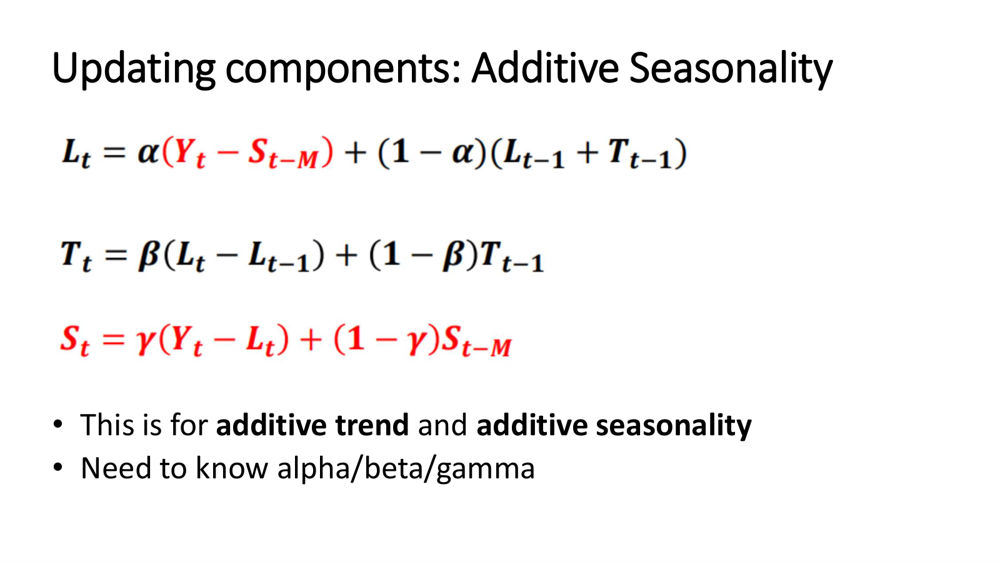
แบบ seasonal บวกมีสามสมการ level: \(L_t=\alpha(Y_t-S_{t-m})+(1-\alpha)(L_{t-1}+T_{t-1})\) ใช้ค่าจริงที่ถอดผลของฤดูออกแล้ว trend: \(T_t=\beta(L_t-L_{t-1})+(1-\beta)T_{t-1}\) เหมือน Holt seasonal: \(S_t=\gamma(Y_t-L_t)+(1-\gamma)S_{t-m}\) ผสมส่วนที่ค่าจริงเกิน level ตอนนี้ กับค่า seasonal ของฤดูเดียวกันในรอบก่อน
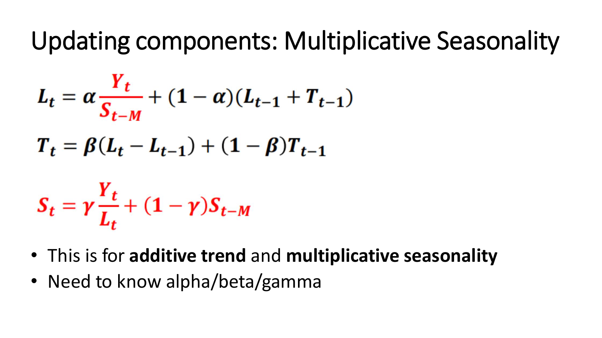
แบบ seasonal คูณใช้หลักเดิมที่อาจารย์สอน "ลบเป็นหาร บวกเป็นคูณ" ตรงส่วน seasonal: level \(L_t=\alpha(Y_t/S_{t-m})+(1-\alpha)(L_{t-1}+T_{t-1})\) และ seasonal \(S_t=\gamma(Y_t/L_t)+(1-\gamma)S_{t-m}\) ส่วน trend เหมือนเดิม ค่า seasonal กลายเป็นอัตราส่วน เช่น 1.2 คือสูงกว่าระดับ 20%
| Seasonal บวก | Seasonal คูณ | |
|---|---|---|
| Forecast | \(L_t+kT_t+S_{t+k-m}\) | \((L_t+kT_t)\times S_{t+k-m}\) |
| Level | \(\alpha(Y_t-S_{t-m})+(1-\alpha)(L_{t-1}+T_{t-1})\) | \(\alpha(Y_t/S_{t-m})+(1-\alpha)(L_{t-1}+T_{t-1})\) |
| Trend | \(\beta(L_t-L_{t-1})+(1-\beta)T_{t-1}\) | |
| Seasonal | \(\gamma(Y_t-L_t)+(1-\gamma)S_{t-m}\) | \(\gamma(Y_t/L_t)+(1-\gamma)S_{t-m}\) |
| ค่า seasonal | บวกลบ เฉลี่ยเป็น 0 | อัตราส่วน เฉลี่ยเป็น 1 |
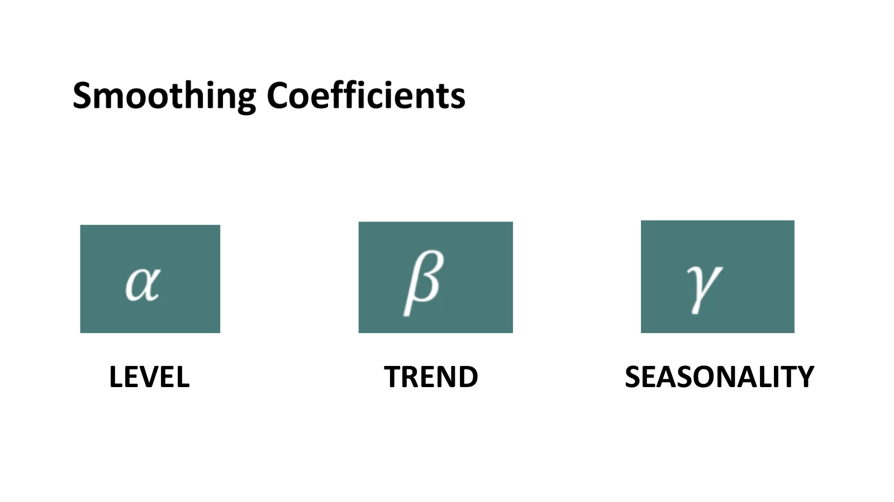
พารามิเตอร์แต่ละตัวคู่กับองค์ประกอบหนึ่งตัว α คู่กับ level, β คู่กับ trend, γ คู่กับ seasonal อาจารย์เสริมว่า φ คือพารามิเตอร์หน่วงอีกตัวถ้ามี damped (Class 4, 2:04:00) ทุกตัวอยู่ระหว่าง 0 ถึง 1 ค่าใกล้ 1 คือปรับตามข้อมูลล่าสุดเร็ว ค่าใกล้ 0 คือแทบไม่เปลี่ยน การหาค่าเริ่มต้น \(L_0,T_0,S_0\) มีขั้นตอนยาว อาจารย์ให้ดูคลิปที่สอนใน Excel แทน
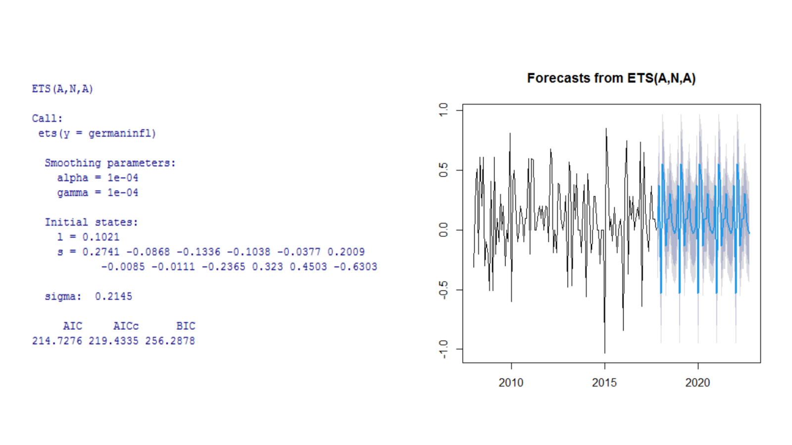
อาจารย์ถามในห้องว่า ETS ของ german ควรเป็นอะไร คำตอบคือ ANA: error บวก ไม่มี trend seasonal บวก (Class 4, 2:05:26) R ก็เลือก ETS(A,N,A) อาจารย์ชี้ว่ามี α และ γ แต่ไม่มี β "เพราะไม่มี trend ที่จริงอันนี้เป็น double ไม่ใช่ triple" (Class 4, 2:08:21) ค่าพยากรณ์ 5 ปีข้างหน้าซ้ำลวดลาย 12 เดือนเดิมทุกปีรอบระดับคงที่ราว 0.1
germaninfl <- ts(read.table("german.txt"), start = 2008, frequency = 12)
# ถ้าข้อมูลเริ่มมีนาคม 2008 ใช้ start = c(2008, 3)
ets(germaninfl)
plot(forecast(ets(germaninfl), h = 60)) # 60 เดือน = 5 ปีETS(A,N,A)
Smoothing parameters: alpha = 1e-04 gamma = 1e-04
Initial states: l = 0.1021
s = 0.2741 -0.0868 -0.1336 -0.1038 -0.0377 0.2009 -0.0085 -0.0111 -0.2365 0.323 0.4503 -0.6303
sigma: 0.2145 AIC 214.7276 AICc 219.4335 BIC 256.2878
| ส่วนของผล | ความหมาย |
|---|---|
| ETS(A,N,A) | ตรงกับคำบรรยายข้อมูล: ไม่มี trend, มี seasonal, ความแปรปรวนคงที่ |
| ไม่มี beta | ไม่มีสมการ trend |
| alpha = gamma = 1e-04 | ใกล้ 0 level และ seasonal แทบไม่เปลี่ยนตลอด 10 ปี |
| l = 0.1021 | ระดับเฉลี่ยของเงินเฟ้อราว 0.10 |
| s = 12 ค่า | seasonal ของ 12 เดือน รวมกันเป็น 0 R พิมพ์ย้อนจากเดือนล่าสุด ค่าท้าย −0.6303 จึงเป็นของ ม.ค. 0.4503 ของ ก.พ. ตรงกับตาราง |
ถ้าเขียน ts(data) โดยไม่ใส่ frequency = 12 R จะได้ ETS(A,N,N) ที่ AIC 315.63 แทน ETS(A,N,A) ที่ AIC 214.73 "ที่จริงมันต้องเป็น ANA ANN นับผิด" เหตุผลคือ ETS ต้องรู้ความยาวรอบก่อน อาจารย์มองว่านี่เป็นข้อจำกัด "คุณมี assumption แล้ว ผมไม่ได้คิดว่าเป็นข้อดีนะ" โมเดลรุ่นหลังจะหาความยาวรอบเอง (Class 4, 2:11:15–2:16:29) อาจารย์สรุปว่า "ถ้าคิดอะไรไม่ออก ใช้ ETS แล้วมันก็จะเลือกให้ แต่คุณจะได้เข้าใจว่าพารามิเตอร์มีอะไรบ้าง"
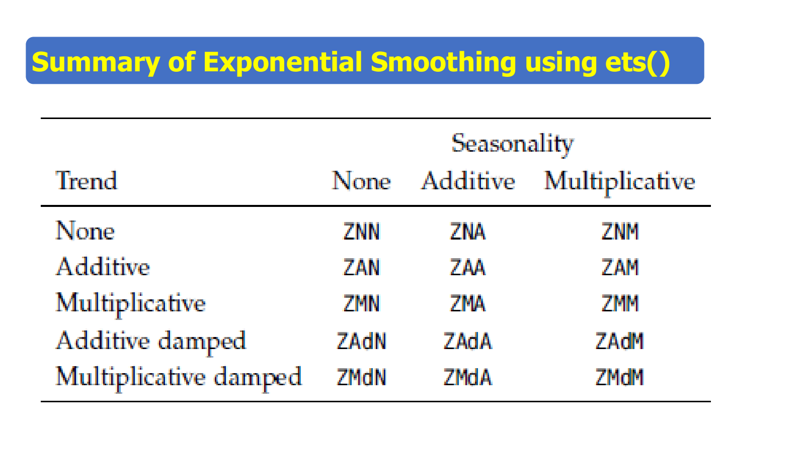
ตารางนี้สรุปรหัสของ model ใน ets() ตัวแรกเป็น Z คือให้ R เลือกชนิดของ error ตัวที่สองคือ trend ตัวที่สามคือ seasonal เช่น simple exponential smoothing คือ ZNN, Holt แบบบวกคือ ZAN, damped คือ ZAdN และ Holt-Winters ที่มี trend บวกกับ seasonal คูณคือ ZAM ถ้าใส่ ZZZ หรือไม่ใส่ model R จะเลือกโมเดลที่ AIC ต่ำสุด
| Trend | No seasonal | Additive seasonal | Multiplicative seasonal |
|---|---|---|---|
| None | ZNN | ZNA | ZNM |
| Additive | ZAN | ZAA | ZAM |
| Multiplicative | ZMN | ZMA | ZMM |
| Additive damped | ZAdN | ZAdA | ZAdM |
| Multiplicative damped | ZMdN | ZMdA | ZMdM |
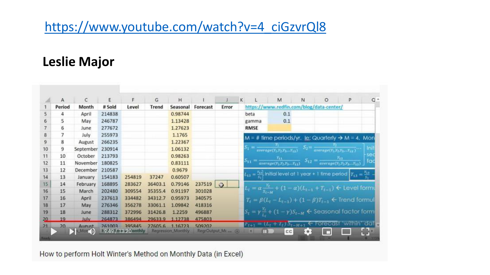
ตัวอย่าง Excel ใช้ยอดขายบ้านรายเดือน m = 12, β = γ = 0.1 และ seasonal แบบคูณ ค่าเริ่มต้นของ seasonal 12 เดือนได้จากค่าของแต่ละเดือนในปีแรกหารด้วยค่าเฉลี่ยของปีนั้น เช่น เมษายน 0.98744 และมิถุนายน 1.27623 ค่าเริ่มต้นของ level คือ \(L_{13}=Y_{13}/S_1\) ตัวอย่างการคำนวณหนึ่งแถว: \(T_{14}=0.1(283627-254819)+0.9(37247)=2880.8+33522.3=36403.1\) และค่าพยากรณ์เมษายน \(F_{17}=(L_{16}+T_{16})\times S_4=(309554+35355.4)\times0.98744=340577\) (ตารางแสดง 340,575 ส่วนต่างมาจากการปัดเศษ) อาจารย์ให้ดูคลิปในหน้าถัดไปถ้าอยากทำเองใน Excel
อาจารย์เปิด Class 5 ด้วยการเทียบ decomposition กับ ETS: decomposition ใน R "ไม่ได้ดีไซน์มาเพื่อ forecast เขาดีไซน์เพื่อแตกองค์ประกอบเฉย ๆ แต่ถ้าทำใน Excel ที่ผมทำ มันสามารถ forecast ได้ ผมว่ามันอาจจะดีพอ ๆ กับ ETS" (Class 5, 0:00:44) และบอกว่าการหา trend ทำได้สองแบบ R ใช้ moving average "เวลาสอนเด็ก MBA ผมจะใช้ regression แทน ผมว่าแบบ regression จะดีกว่า" (Class 5, 0:02:48–0:03:53)
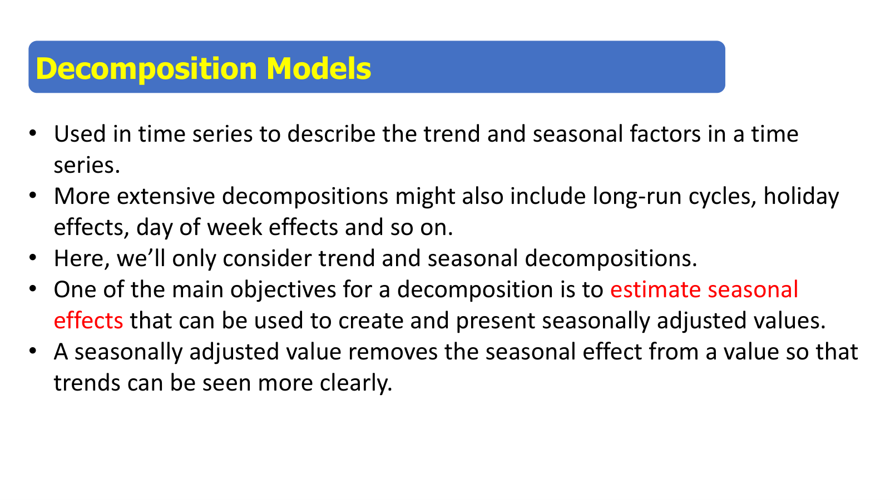
Decomposition ใช้บรรยาย trend และ seasonal ของอนุกรม แบบที่ละเอียดกว่าอาจรวมรอบระยะยาว ผลของวันหยุด หรือวันในสัปดาห์ แต่ที่นี่ใช้แค่ trend กับ seasonal วัตถุประสงค์ข้อหนึ่งคือ estimate seasonal effects เพื่อสร้างค่าที่ปรับฤดูกาลแล้ว (seasonally adjusted) เช่น ยอดขายธันวาคมสูงกว่าพฤศจิกายนทุกปี ค่าดิบจึงบอกไม่ได้ว่าธุรกิจดีขึ้นจริงหรือแค่เป็นผลของฤดู ค่าที่ปรับฤดูกาลแล้วตอบคำถามนี้ได้
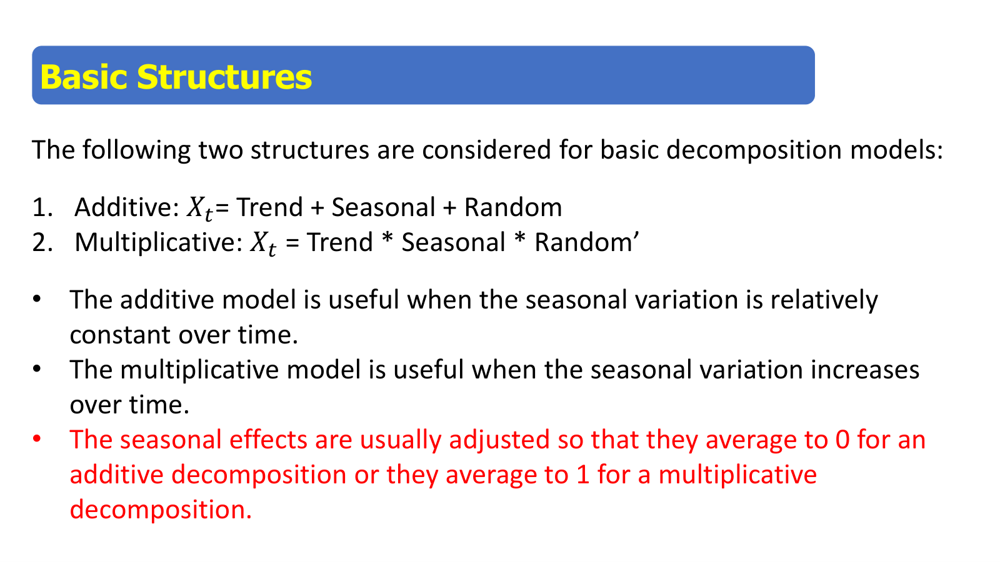
โครงสร้างมีสองแบบ แบบบวก \(X_t=\text{Trend}+\text{Seasonal}+\text{Random}\) เหมาะเมื่อการแกว่งตามฤดูคงที่ อาจารย์อธิบายว่าใช้กับ "trend นิ่ง ๆ variance ไม่ค่อยแกว่ง" แบบคูณ \(X_t=\text{Trend}\times\text{Seasonal}\times\text{Random}\) ใช้กับ "อนุกรมที่เปลี่ยนเร็ว แกว่งกว้าง" (Class 5, 0:01:48–0:02:36) ข้อความที่อาจารย์ใส่สีบนสไลด์ระบุว่า •The seasonal effects are usually adjusted so that they average to 0 for an additive decomposition or they average to 1 for a multiplicative decomposition. เหตุผลคือ seasonal ต้องบอกเฉพาะส่วนที่เบี่ยงจากระดับปกติ ถ้าค่าเฉลี่ยของ seasonal ไม่เป็น 0 (หรือ 1) ส่วนเกินนั้นควรอยู่ใน trend
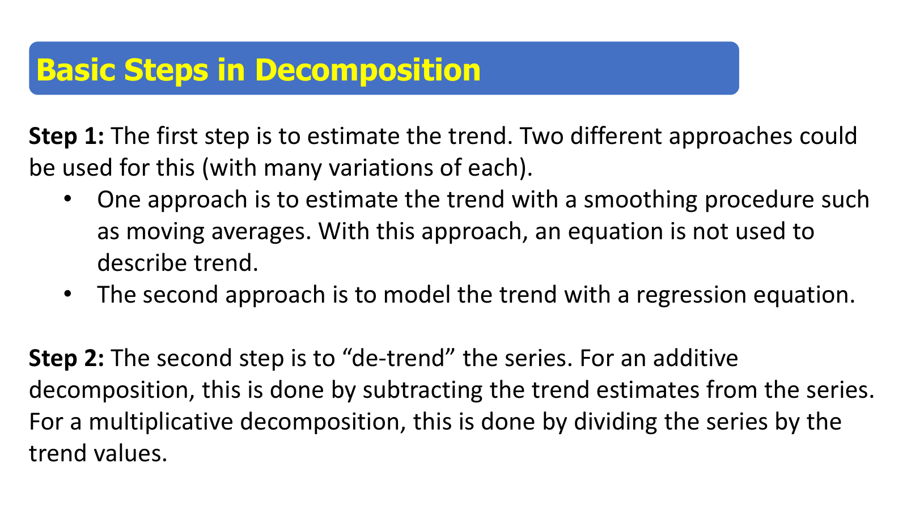
Step 1 ประมาณ trend ด้วย moving average ซึ่งไม่มีสมการ หรือด้วย regression ซึ่งมีสมการ อาจารย์ย้ำว่า "ไม่ว่าคุณจะทำแบบคูณหรือบวก ก็ต้องหาเส้นตรงก่อน" Step 2 คือ de-trend แบบบวกให้ลบ trend ออก แบบคูณให้หารด้วย trend "เขาจะตั้งชื่อตรงนี้ว่า detrend ... เอาตัวนี้ไปหา seasonal index" (Class 5, 0:04:07–0:08:32)
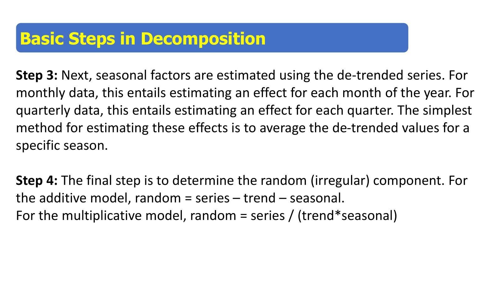
Step 3 ประมาณ seasonal จากค่าที่ de-trend แล้ว ข้อมูลรายเดือนได้ 12 ค่า รายไตรมาสได้ 4 ค่า วิธีง่ายที่สุดคือเฉลี่ยค่า de-trend ของฤดูเดียวกัน Step 4 หา random แบบบวกคือ series − trend − seasonal แบบคูณคือ series ÷ (trend × seasonal) อาจารย์บอกว่าส่วน error "ไม่ค่อยยุ่ง" และชี้ข้อจำกัดว่า decomposition "assume ว่ามี seasonal index ที่ quarter ที่ 1, 2, 3, 4 ... ถ้าโมเดลประเภทอื่นอาจจะไม่มีก็ได้" (Class 5, 0:09:14)
| ขั้น | แบบบวก | แบบคูณ |
|---|---|---|
| 1. Trend | moving average หรือ regression | |
| 2. De-trend | series − trend | series ÷ trend (ค่ารอบ 1) |
| 3. Seasonal | เฉลี่ยค่า de-trend ของฤดูเดียวกัน แล้วปรับให้เฉลี่ยเป็น 0 | เฉลี่ยค่า de-trend ของฤดูเดียวกัน แล้วปรับให้เฉลี่ยเป็น 1 |
| 4. Random | series − trend − seasonal | series ÷ (trend × seasonal) |
| พยากรณ์ | trend อนาคต + seasonal | trend อนาคต × seasonal |
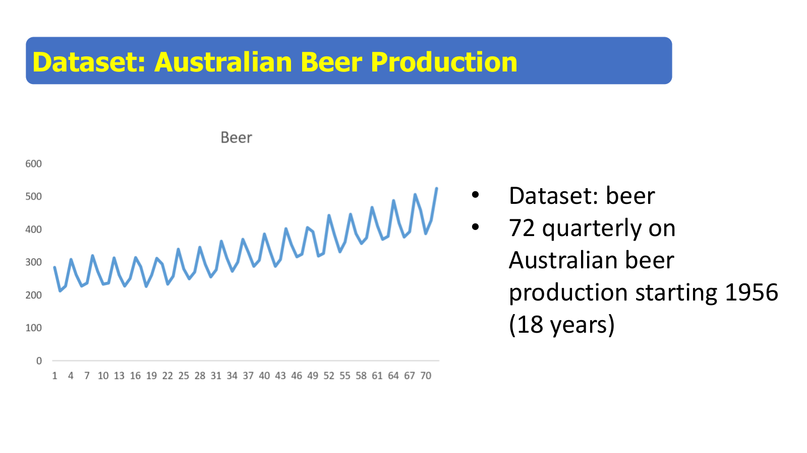
การผลิตเบียร์ของออสเตรเลียรายไตรมาส 72 ค่า คือ 18 ปี เริ่มปี 1956 (Class 5, 0:08:39) ค่าเริ่มที่ 284.4, 212.8, 226.9, 308.4 และขึ้นไปถึงราว 525 ในช่วงท้าย ไตรมาส 4 สูงสุดและไตรมาส 2 ต่ำสุดทุกปี มี trend ขาขึ้นและ seasonal รอบละ 4 ไตรมาส ระยะจากยอดถึงท้องกว้างขึ้นจากราว 95 เป็นราว 140 จึงค่อนไปทางแบบคูณ
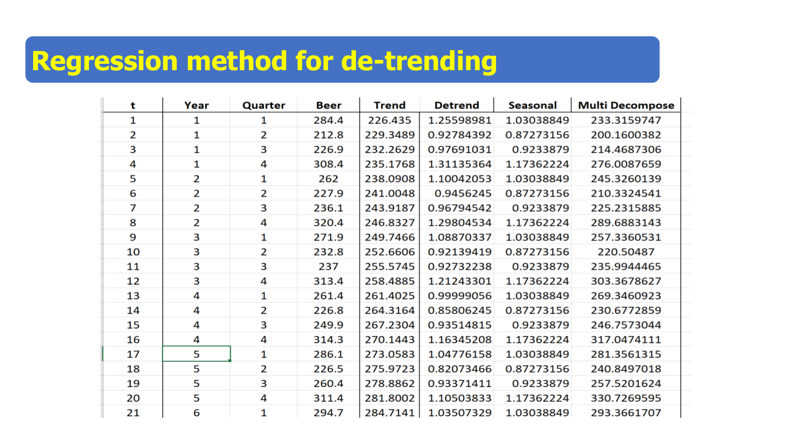
อาจารย์ทำวิธีนี้ทีละคอลัมน์ใน Excel (ไฟล์ Decompose Examples) ใช้แบบคูณ
regress Beer บน t = 1, …, 72 ได้ \(T_t=223.521+2.914t\) จึงได้ \(T_1=226.435\), \(T_2=229.349\), …, \(T_{72}=433.326\) อาจารย์บอกว่าเส้นตรงนี้ "เป็นค่าประมาณที่ไม่ค่อยดีหรอก เพราะมันเป็นเส้นตรงเลย ๆ เราต้องไปปรับนิดนึง" ด้วย seasonal
t = 1: \(284.4/226.435=1.256\) t = 2: \(212.8/229.349=0.928\) ค่ามากกว่า 1 แปลว่าจุดนั้นสูงกว่า trend น้อยกว่า 1 คือต่ำกว่า
แต่ละไตรมาสมี 18 ค่า เฉลี่ยได้ Q1 1.0316, Q2 0.8739, Q3 0.9246, Q4 1.1748 อาจารย์อ่านว่า "ไตรมาสที่ 2 โดย overall ยอดขายจะลงจาก trend ประมาณ 13% ไตรมาสที่ 4 จะสูงขึ้นประมาณ 17%"
ค่าเฉลี่ยของสี่ตัวคือ 1.0012 อาจารย์ถามในห้องว่าปรับยังไง คำตอบคือ "ลบ 0.0012 ทุกตัว" ได้ Q1 1.0304, Q2 0.8727, Q3 0.9234, Q4 1.1736 (ถ้าเฉลี่ยเป็น 1.2 ก็ลบ 0.2 ทุกตัว)
t = 1: \(226.435\times1.0304=233.32\) t = 4: \(235.177\times1.1736=276.01\) ใส่ seasonal วนซ้ำ 18 รอบตามไตรมาส
t = 1: \(284.4/233.32=1.219\) ไตรมาสนั้นผลิตมากกว่าที่ trend และ seasonal อธิบายราว 22%
อาจารย์อธิบายภาพของผลลัพธ์ว่า "เหมือนคุณเอานิ้วดึงลงมานิดนึง ไตรมาสที่สองก็ดึงลง 13% ไตรมาสที่ 4 ก็ดึงขึ้น 17%" จากเส้นตรง (Class 5, 0:29:46) เส้น fitted ทับข้อมูลจริงได้ดี RMSE ภายใน 72 จุดเท่ากับ 14.7 และ MAPE 3.8%
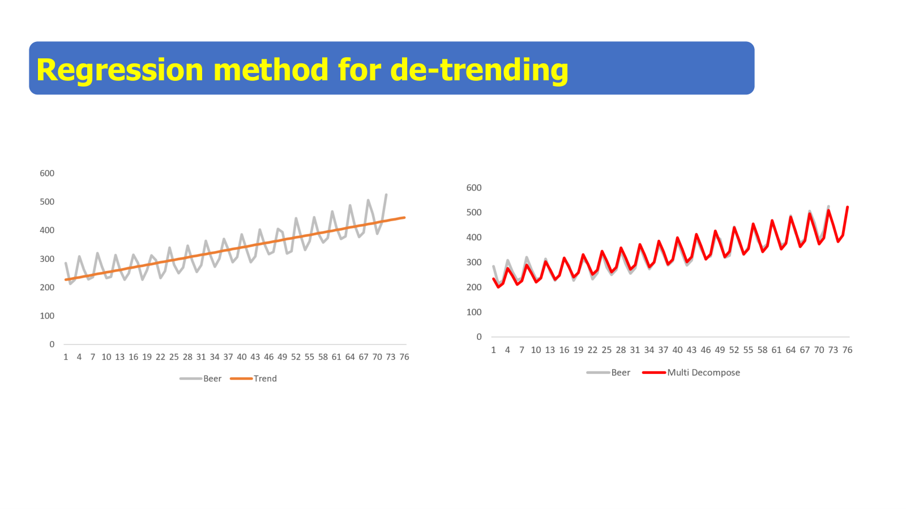
เมื่อได้ trend กับ seasonal แล้ว การพยากรณ์ทำได้ทันที คือต่อเส้นตรงไปยังเวลาในอนาคต แล้วคูณด้วย seasonal ของไตรมาสนั้น กราฟหน้านี้แสดงทั้งเส้น trend และค่า fitted ที่ต่อไปถึงปีที่ 19
\(T_{73}=223.521+2.914(73)=436.24\), \(T_{74}=439.15\), \(T_{75}=442.07\), \(T_{76}=444.98\)
Q1: \(436.24\times1.0304=449.5\) Q2: \(439.15\times0.8727=383.3\) Q3: \(442.07\times0.9234=408.2\) Q4: \(444.98\times1.1736=522.2\)
กราฟแรกคือเส้น trend ตรงจากราว 226 ถึง 445 กราฟที่สองคือ fitted ซึ่งทับข้อมูลจริงเกือบตลอดและต่อไปถึงจุดที่ 76 เป็นค่าพยากรณ์ จุดเด่นของวิธี regression คือมีสมการของ trend จึงพยากรณ์อนาคตได้ตรง ๆ และไม่มีค่าหายที่หัวท้าย สำหรับแบบบวก อาจารย์บอกว่าทำแบบเดียวกัน แต่ detrend เป็น Beer − Trend ได้ seasonal เป็นหน่วยเดียวกับข้อมูล แล้วนำไป "บวก" กับ trend (Class 5, 0:31:01) คำนวณกับข้อมูลเดียวกันได้ Q1 +8.69, Q2 −41.19, Q3 −24.99, Q4 +57.49 ซึ่งเฉลี่ยเป็น 0 อยู่แล้ว
R ใช้ขั้นตอนเดียวกัน ต่างแค่ Step 1 ที่หา trend ด้วย centered moving average แทน regression (Class 5, 0:33:08)
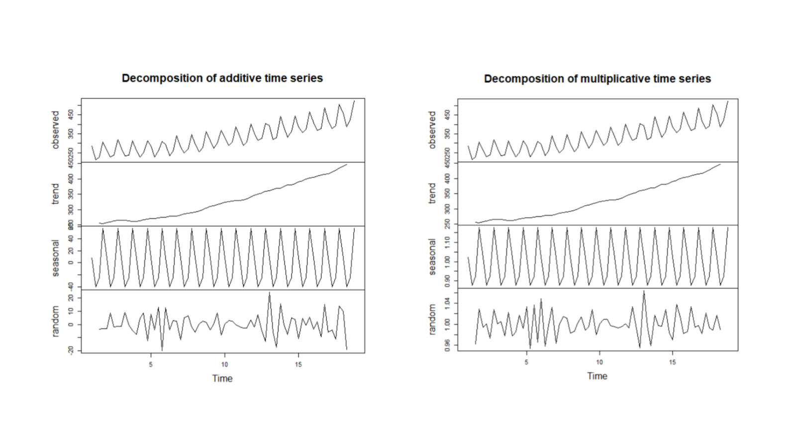
R แสดงสี่ส่วนสำหรับแต่ละแบบ observed, trend, seasonal และ random ส่วน trend เหมือนกันทั้งสองแบบเพราะมาจาก centered moving average ชุดเดียวกัน ส่วน seasonal แบบบวกมีหน่วยเป็นจำนวน อยู่ระหว่างราว −40 ถึง 57 แบบคูณเป็นอัตราส่วนราว 0.88 ถึง 1.18 ส่วน random ควรไม่มีแบบแผน ถ้ายังเห็นรอบซ้ำหรือ trend แปลว่าแยกไม่หมด
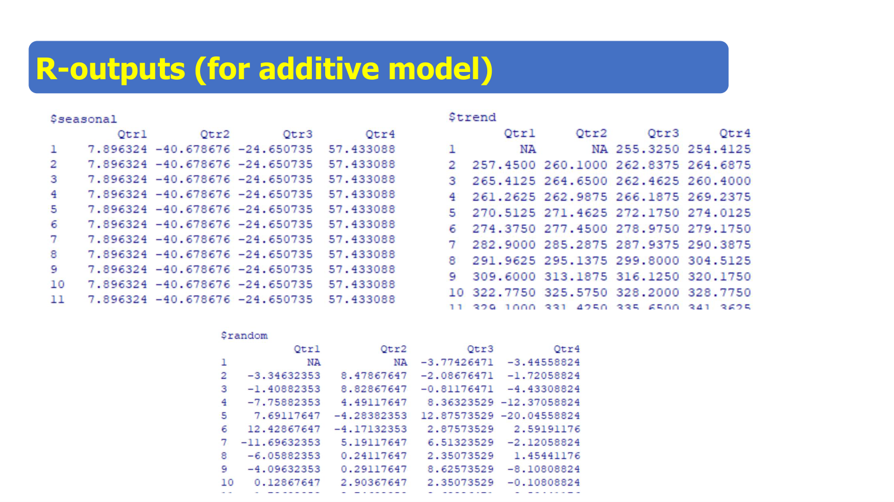
seasonal แบบบวกคือ Qtr1 7.896, Qtr2 −40.679, Qtr3 −24.651, Qtr4 57.433 อาจารย์ถามว่า "มันเยอะ ทำไมมันเยอะ เพราะมันเป็นแบบบวก ถ้าเป็นแบบคูณจะประมาณ 1" (Class 5, 0:42:42) trend ปีแรกเป็น NA ที่ Qtr1 และ Qtr2 แล้วเป็น 255.325 และ 254.4125 ส่วน random ปีแรกคือ −3.774 และ −3.446 ตรวจด้วยมือ: Qtr3 ปีแรก \(226.9-255.325-(-24.651)=-3.774\) และค่าเฉลี่ยของ seasonal ทั้งสี่ \((7.896-40.679-24.651+57.433)/4\approx0\)
seasonal แบบคูณคือ 1.0238, 0.8754, 0.9233, 1.1775 เฉลี่ยเป็น 1 อาจารย์บอกว่า "ใกล้เคียง regression" (Class 5, 0:45:41) ค่าจาก regression คือ 1.0304, 0.8727, 0.9234, 1.1736 ต่างกันเล็กน้อยเพราะ trend ที่ใช้ต่างกัน random ปีแรก Qtr3 คือ \(226.9/(255.325\times0.9233)=0.9625\) สังเกตว่า seasonal ของ Qtr4 ที่ 1.1775 แปลว่าไตรมาส 4 ผลิตมากกว่า trend 17.75% และไฟล์ R ของอาจารย์บอกวิธีปรับค่าอนาคตให้เป็น seasonally adjusted: หารด้วย seasonal เช่นไตรมาส 4 ได้ 535 จะได้ \(535/1.1775=454.3\)
trend ของ R มาจาก centered moving average ที่ span 4 เพราะหนึ่งปีมีสี่ไตรมาส อาจารย์เรียกว่า "average ของ average อีกทีหนึ่ง" (Class 5, 0:33:54) เฉลี่ยเวลา 1–4 ได้ค่าที่จุดกึ่งกลาง 2.5 เฉลี่ยเวลา 2–5 ได้ค่าที่ 3.5 ซึ่งไม่ใช่เวลาที่มีข้อมูลทั้งคู่ เมื่อเฉลี่ยสองค่านี้อีกครั้ง จุดกึ่งกลางคือ 3 ตรงกับเวลาที่มีข้อมูลพอดี
กระจาย \(\tfrac12[\tfrac14(x_1+x_2+x_3+x_4)+\tfrac14(x_2+x_3+x_4+x_5)]\) ได้น้ำหนัก \(\tfrac18x_1+\tfrac14x_2+\tfrac14x_3+\tfrac14x_4+\tfrac18x_5\) ค่า \(x_1\) กับ \(x_5\) อยู่ในวงเล็บเดียว จึงได้ 1/8 ส่วนสามตัวกลางอยู่ทั้งสองวงเล็บ จึงได้ 1/4 \(x_1\) กับ \(x_5\) เป็นไตรมาสเดียวกันคนละปี ทุกไตรมาสจึงได้น้ำหนักรวม 1/4 เท่ากัน ผลของฤดูหักล้างกันหมด เหลือแต่ trend
\(\tfrac18(284.4)+\tfrac14(212.8+226.9+308.4)+\tfrac18(262)=35.55+187.025+32.75=255.325\)
\(\tfrac18(212.8)+\tfrac14(226.9+308.4+262)+\tfrac18(227.9)=26.6+199.325+28.4875=254.4125\)
ข้อมูลรายไตรมาสหาย 2 จุดแรกและ 2 จุดท้าย อาจารย์ถามว่าถ้ารายเดือนจะหายกี่จุด คำตอบคือหาย 6 ตัวแรกและ 6 ตัวท้าย เริ่มที่ \(x_7\) เพราะสูตรต้องใช้ \(x_{t-6}\) ถึง \(x_{t+6}\) (Class 5, 0:37:25–0:39:56)
beerprod <- ts(read.table("beer.txt"), freq = 4) # อย่าลืมบอกว่าเป็นรายไตรมาส
decompbeer <- decompose(beerprod, type = "additive"); plot(decompbeer)
decompbeermult <- decompose(beerprod, type = "multiplicative")
trendpattern <- filter(beerprod, filter = c(1/8, 1/4, 1/4, 1/4, 1/8), sides = 2)| โค้ด | ทำอะไร |
|---|---|
| ts(..., freq = 4) | บอกว่าข้อมูลรายไตรมาส ถ้ารายเดือนใช้ 12 อาจารย์ย้ำ "อย่าลืมบอกโปรแกรมว่าเป็น quarter" |
| decompose(x, type = ...) | แยก trend, seasonal, random ด้วย centered moving average |
| filter(..., c(1/8, 1/4, 1/4, 1/4, 1/8), sides = 2) | คำนวณ centered moving average เองด้วยน้ำหนักในหัวข้อนี้ sides = 2 คือใช้ทั้งสองข้าง |
อาจารย์สรุปว่าแบบ R "มันไม่เหมาะ เพราะมันทำแค่ smoothing หายไปสองหัวกับท้าย มันก็อาจจะไม่เหมาะในการ forecast ถ้าจะให้แนะนำ ให้ทำแบบที่ผมสอนที่เป็น Excel" (Class 5, 0:46:06–0:46:30)
| Centered moving average (R) | Regression (Excel ของอาจารย์) | |
|---|---|---|
| สมการของ trend | ไม่มี | มี เช่น 223.521 + 2.914t |
| trend ที่หัวและท้าย | NA | ครบทุกจุด |
| พยากรณ์อนาคต | ทำตรง ๆ ไม่ได้ | ต่อเส้นแล้วคูณ (หรือบวก) seasonal |
| รูปของ trend | โค้งตามข้อมูลได้ | ตามรูปสมการ เช่น เส้นตรง |
| seasonal แบบคูณของ beer | 1.0238, 0.8754, 0.9233, 1.1775 | 1.0304, 0.8727, 0.9234, 1.1736 |
อาจารย์ใช้วิธีเดียวกันนี้กับข้อมูล Xbox รายเดือนใน Class 5 และเทียบกับ ETS(M,A,M) ได้ค่าพยากรณ์ "ใกล้เคียงกัน ไม่ได้ต่างกันมาก" (Class 5, 1:01:49–1:03:29) รายละเอียดของ Xbox อยู่ใน Lesson 5 ซึ่งใช้ไฟล์ R ของ Lecture 5
ไฟล์ข้อมูล CPALL.txt, sales.txt, singapore.txt, german.txt, beer.txt และไฟล์ Excel Smoothing Examples, Decompose Examples อยู่ในโฟลเดอร์ CLASS 4 บน myCourseVille
ดึง \((1-\alpha)\) ออกจากพจน์ที่สองเป็นต้นไป: \(F_{t+1}=\alpha X_t+(1-\alpha)[\alpha X_{t-1}+\alpha(1-\alpha)X_{t-2}+\dots]\)
ในวงเล็บคือนิยามของ \(F_t\) (เลื่อนเวลาลงหนึ่ง) จึงได้ \(F_{t+1}=\alpha X_t+(1-\alpha)F_t\)
น้ำหนักรวม \(\alpha\sum_{j=0}^{\infty}(1-\alpha)^j=\alpha\cdot\dfrac{1}{1-(1-\alpha)}=1\) เมื่อ \(0<\alpha<1\)
\(F_1=100+10=110\)
\(L_1=0.2(115)+0.8(110)=111\), \(T_1=0.5(111-100)+0.5(10)=10.5\)
\(F_2=111+10.5=121.5\)
\(L_2=0.2(118)+0.8(121.5)=120.8\), \(T_2=0.5(120.8-111)+0.5(10.5)=10.15\)
\(F_4=L_2+2T_2=120.8+20.3=141.1\)
ค่าเฉลี่ย 4 จุดมีจุดกึ่งกลางที่เวลาครึ่ง (2.5, 3.5) จึงเฉลี่ยสองค่าที่ติดกันอีกครั้งให้ตรงเวลา 3: \(\tfrac12[\tfrac14(x_1+\dots+x_4)+\tfrac14(x_2+\dots+x_5)]\) กระจายแล้ว \(x_1,x_5\) ได้ 1/8 ส่วน \(x_2,x_3,x_4\) ได้ 1/4
\(x_1\) กับ \(x_5\) เป็นไตรมาสเดียวกัน รวมได้ 1/4 ทุกไตรมาสจึงได้น้ำหนักรวม 1/4 เท่ากัน ผลของฤดูที่สูงหรือต่ำจึงถูกเฉลี่ยออกเท่ากัน เหลือแต่ trend
ts(data) โดยไม่ใส่ frequency แล้วรัน ets() จะเกิดอะไรขึ้นSMA ให้น้ำหนักเท่ากันทุกค่าใน k ค่าล่าสุด EMA แก้ให้ค่าใหม่มีน้ำหนักมากกว่าค่าเก่าแบบลดลงทีละสัดส่วน แต่ทั้งสองประมาณแค่ระดับ เมื่อพยากรณ์ช่วง test ไม่รู้ค่าใหม่ จึงใช้ระดับล่าสุดค่าเดียวซ้ำทุกจุด เป็นเส้นราบ ใช้กับข้อมูลที่มี trend ไม่ได้
Holt เพิ่มสมการความชัน พยากรณ์เป็น \(L_t+kT_t\) จึงเป็นเส้นเอียง แต่จับ seasonal ไม่ได้ Holt-Winters เพิ่มสมการ seasonal พยากรณ์เป็น \(L_t+kT_t+S_{t+k-m}\) หรือแบบคูณ จึงจับรูปแบบซ้ำตามฤดูได้
จาก output นี้ จงบอกชื่อโมเดล ความหมายของ phi และอธิบายว่าทำไมข้อมูลนี้ถึงได้โมเดลแบบนี้
> ets(singapur) ETS(M,Ad,N) Smoothing parameters: alpha = 0.528 beta = 1e-04 phi = 0.959 Initial states: l = 69.3963 b = 0.868 AIC 62.09
ETS(M,Ad,N): error แบบคูณ trend แบบบวกที่ถูกหน่วง (damped) ไม่มี seasonal
phi = 0.959 คือตัวหน่วงความชัน ความชันของแต่ละก้าวข้างหน้าคูณด้วย φ, φ², … จึงค่อย ๆ ลดลง ค่าพยากรณ์โค้งเข้าแทนที่จะขึ้นเป็นเส้นตรง
ข้อมูลเป็นร้อยละที่เกิน 100 ไม่ได้ ถ้าใช้ trend ตรงไปเรื่อย ๆ จะพยากรณ์เกินเพดาน damped trend จึงเหมาะ
output ของ decompose แบบคูณกับข้อมูลรายไตรมาสให้ seasonal = 1.0238, 0.8754, 0.9233, 1.1775 และ trend ของไตรมาสหนึ่ง (Qtr3) = 255.325 ค่าจริง = 226.9 จงหา random ของจุดนั้นและตีความ
random = series ÷ (trend × seasonal) \(=226.9/(255.325\times0.9233)=226.9/235.74=0.9625\)
ค่าจริงต่ำกว่าที่ trend และ seasonal อธิบายราว 3.75% เป็นส่วนสุ่มที่เหลือ
รันโค้ด CPALL ในหัวข้อ 2 และ 3 แล้วตอบว่า SMA k = 3 กับ EMA α = 0.2 ได้ RMSE และ MAE บน test เท่าใด ควรเลือกวิธีไหน และถ้าไม่กำหนด alpha ให้ ets(train.ts, model = "ANN") R เลือก α เท่าใด
SMA k=3: ค่าพยากรณ์ 1.5533 test RMSE 1.663 MAE 1.586 EMA α=0.2: ค่าพยากรณ์ 0.5105 test RMSE 0.738 MAE 0.543 ets(train.ts, model = "ANN") → alpha = 1e-04
เลือก EMA เพราะ error บน test ต่ำกว่า เมื่อให้ R เลือกเอง α เกือบเป็น 0 แปลว่าค่าพยากรณ์ดีที่สุดคือค่าเฉลี่ยระยะยาว เพราะผลตอบแทนหุ้นรายวันแกว่งแบบสุ่มรอบค่าคงที่
ทำ decomposition แบบคูณด้วย regression กับ beer.txt ใน R ตามขั้นของอาจารย์ แล้วพยากรณ์ 4 ไตรมาสถัดไป
b <- read.table("beer.txt")[,1]; t <- 1:72
fit <- lm(b ~ t); Tt <- fitted(fit)
q <- rep(1:4, 18)
si <- tapply(b / Tt, q, mean) # seasonal index ก่อนปรับ
si <- si - (mean(si) - 1) # ปรับให้เฉลี่ยเป็น 1
T.new <- coef(fit)[1] + coef(fit)[2] * (73:76)
T.new * sicoef: 223.521 2.914 si ก่อนปรับ: 1.0316 0.8739 0.9246 1.1748 (เฉลี่ย 1.0012) si หลังปรับ: 1.0304 0.8727 0.9234 1.1736 T.new: 436.24 439.15 442.07 444.98 พยากรณ์: 449.48 383.25 408.19 522.23
ตรงกับตาราง Excel ของอาจารย์ (ต่างในหลักทศนิยมเพราะการปัดเศษ)
ets(), holt(), decompose() และรู้ว่าต้องใส่ frequencyบทถัดไป: Lesson 5 — โมเดล MA และ AR
| หน้า | เนื้อหา | สอนที่ |
|---|---|---|
| 1 | ปก Smoothing Methods | etc — ปก |
| 2–5 | Forecasting techniques, moving average | หัวข้อ 1 |
| 6–10 | CPALL, SMA | หัวข้อ 2 |
| 11–14 | EMA, เทียบ SMA กับ EMA | หัวข้อ 3 |
| 15 | หน้าคั่น Advance Exponential Smoothing | etc — หน้าคั่น |
| 16 | Type of exponential smoothing | หัวข้อ 4 |
| 17–18 | Dataset 2: Sales | หัวข้อ 5 |
| 19–20 | รูปแบบ trend × seasonal, basic model | หัวข้อ 4 |
| 21–29 | Holt: สมการ, multiplicative, error term, รูปทรงของค่าพยากรณ์ | หัวข้อ 5 |
| 30–32 | Holt ใน Excel และ R | หัวข้อ 6 |
| 33 | Singapore, damped trend | หัวข้อ 7 |
| 34–44 | German inflation, Holt-Winters, ets() summary, Excel | หัวข้อ 8 |
| 45 | ลิงก์คลิป YouTube สอนพยากรณ์ด้วย Excel | etc — ลิงก์อ้างอิง |
| 46 | หน้าคั่น Decomposition Models | etc — หน้าคั่น |
| 47–50 | Decomposition: แนวคิดและสี่ขั้น | หัวข้อ 9 |
| 51 | Australian beer | หัวข้อ 10 |
| 52–56 | decompose() ใน R, centered moving average | หัวข้อ 11 |
| 57–58 | Regression method และพยากรณ์ | หัวข้อ 10 |
| แหล่ง | ช่วงที่ใช้ | หัวข้อ |
|---|---|---|
| Class 4 | ทั้งคาบ | 1–8 |
| Class 5 | 0:00–1:04 decomposition, Xbox; 2:10 ควิซ Excel | 9–11 |
| R_codes, CPALL, sales, singapore, german, beer, Smoothing Examples.xlsx, Decompose Examples.xlsx (CLASS 4) | ทั้งไฟล์ | 2–12 |